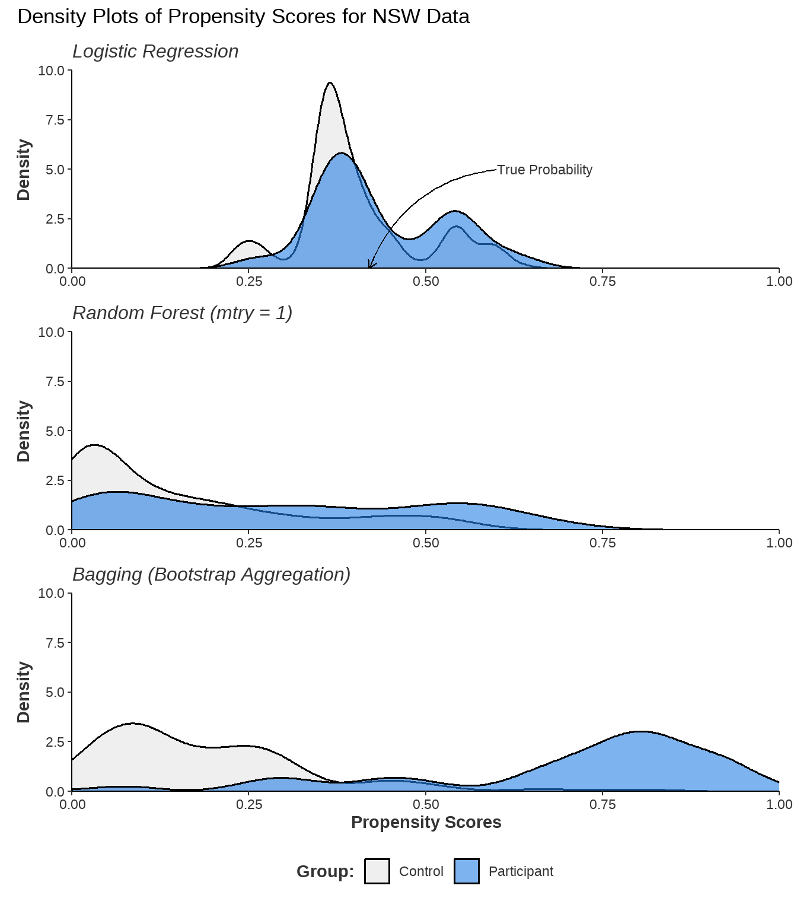

3.1 A Conventional Approach: Propensity Scores and Balance
In a randomised control trial (RCT), researchers believe treatment and control groups are similar because of randomisation. In this case, the similar groups are compatible and should not have systematic differences. For similar groups, the average treatment effect (ATT) is a contrast of means from Equation 2.3. In observational data, the exposure to a treatment is unlikely to be random, implying there may be systematic differences between groups. Systematic differences refer to consistent variations or disparities between groups in the study. These differences are not due to random chance but rather indicate a pattern or trend, perhaps due to selection-bias. As groups are not comparable, Equation 2.3 leads to a biased estimate of the treatment effect.
For example, consider the causal question: “How much does obtaining a bachelors degree increase lifetime earnings?”. Individuals who complete a bachelor’s degree are not selected at random for university programs (treatment) and may have different observable attributes than those who do not attend a university (control). Perhaps those who attend university have higher academic abilities, higher motivation, or grew up with parents with higher income. Because of these systematic group covariate differences, a simple comparison of mean income could lead to attributing university attendance as the cause of higher incomes when the effect is confounded by the differences in covariates between groups. Recall that Figure 2.1 (a) shows a confounding relationship. In this example, the confounding covariates are academic ability, motivation, and parental income that impact the probability of someone obtaining a bachelors degree. This discussion introduces the idea of covariate balance which is a key concept behind underlying propensity score methods.
Note 3.1: What is Covariate Balance
Covariate balance is the idea that covariates are approximately equivalent across treatment and control groups. If the distribution of each covariate are the same for each group, then those covariates are balanced. If covariates are similar across groups, then there should not be any confounding. Equally, similar covariates across groups implies exchangability between groups as the two groups should be similar (thus can be exchanged). There is a conceptual equivalence between covariate balance, unconfoundedness, and exchangeability meaning that Equation 2.6 is satisfied when covariates are balanced.
In bachelor’s degree example, suppose that comparable treatment and control individuals are matched together to create balanced pairs. Between these pairs, covariates are balanced such as the same academic ability, motivation, parent income, geographic residence etc. Comparing the balanced matched pairs should result in a robust estimate of a bachelor’s degree’s impact on earnings because the individuals are exchangeable. As pairs are exchangeable, Equation 2.7 is satisfied. The covariates are said to be “conditioned on” by matching individuals on these covariates. However, practically this matching is difficult to perform as exact matches cannot be made as the number of covariates increases. For example, finding two people with the same gender is simple but finding two people with the same gender, age, education, income, motivation, location, experience, and race is nearly impossible. Thus, there is a dimensionality problem as the dimension of the number of covariates increases.
Rosenbaum and Rubin (1983) offer a valuable tool for analysing observational data called the propensity score. The propensity score is the probability of treatment assignment conditioned on observed covariates. Essentially, the propensity score reduces the dimension of the number of covariates to a single dimension to avoid the dimensionality problem. Let the propensity score be denoted as \(e(X)\) and be expressed as:
\[
e(X)=P(T=1|X).
\tag{3.1}\]
A prediction of the probability of treatment based on the covariates is the best summary of the individual covariates. The covariate imbalance between bachelors degrees and controls arose from people self-selecting themselves into a bachelors degree programme because of these covariates. For example, people with higher motivation and academic ability are more likely to go to university. If it is the covariates that impact the probability of going to university, then a prediction of the probability of going to university based on these covariates should summarise the covariate effects.
Conditioning on this propensity score should balance the data and meet the conditional independence assumption stated in Equation 2.7. There are many sources that offer a comprehensive guide to propensity score methods such as (Cunningham 2021, chap. 4) who provides applications and coded examples in R, Python, and Stata.
Note 3.2: Balance and Propensity Scores
Note that an RCT will satisfy Equation 2.6 as randomisation implies the potential outcomes are independent of the treatment assignment. Propensity score methods aim to satisfy Equation 2.7 as the potential outcomes are independent of the treatment status conditioned on some covariates. Conditioning on the propensity score aims to replicate an RCT in the observational data by balancing covariates between groups. When units are conditioned on their propensity score, differences in outcomes can be confidently attributed to the treatment itself, rather than to pre-existing differences in covariates. The variables used to predict the propensity score are said to be conditioned on.
Two common methods that use propensity scores are propensity score matching (PSM) and inverse propensity weighting (IPW). PSM creates matched sets with similar propensity scores. IPW creates a balanced pseudo-population, where observations are weighted on the inverse of the propensity score. The pseudo-population is created by up-weighting observations with a low propensity score and down-weighting observations with a high propensity score.
King and Nielsen (2019) provide a notable criticism of propensity score matching, which is a very interesting read. In the following examples, IPW is used due to theoretical advantages and ease of software implementation.
3.1.1 Propensity Score Modelling with Logistic Regression
A conventional propensity score model uses logistic regression to predict a probability between \(0\) and \(1\). Models may be specified to include interaction terms and polynomial terms so the model captures complex trends in the data. There are a range of approaches for specifying a propensity score model, but the process is driven by heuristics (Brookhart et al. 2006; Heinrich 2010). One suggestion is to include two-way interaction terms between covariates and squared terms and then remove terms which are statistically significant. Many researchers do not discuss the specification of their propensity model in papers. Austin (2008) review 47 papers that use propensity scores and few assess balance, perform adequate model selection and diagnosis, or apply correct statistical tests.
It’s important to note that the true value of a propensity score is never observable. A propensity score that is close to the theoretical probability is well calibrated. Using poorly calibrated propensity scores may result in poor balance and biased estimation of the treatment effect. The calibration of propensity scores depends on correctly specifying the model used to estimate them. Covariates may be omitted by error, poorly measured, or be unobservable. If the true relationship is non-linear or involves complex interactions between covariates, logistic regression may not predict calibrated scores. Another important note is that the propensity model itself does not have an informative causal interpretation. In logistic regression, the coefficients are the log-odds of the treatment assignment for a variable which is not informative of the desired estimand.
The first application of machine learning in causal inference was to predict propensity scores. Despite this, logistic regression still appears to be the most common model for predicting propensity scores.
3.2 Probability Machines: Probability Theory and Machine Learning
Predicting probabilities is not a typical machine learning task. Supervised machine learning usually focuses on classifying observations into groups, or regression to predict continuous outcomes. Probability prediction is a hybrid of these tasks, aiming to predict the continuous probability that an observation will belong to a certain class. In this context, these applications are sometimes called probability machines.
Probability machines are valuable in applications requiring calibrated probability predictions. Probability machines can predict loan defaults or other adverse events in finance. They estimate the likelihood of customer response to a campaign in marketing. In criminal justice, they help forecast recidivism or future arrests, informing parole decisions. Weather forecasting uses probability machines to predict events like the chance of rain. Gamblers and bettors want robust probability predictions to enhance their betting strategies. Probability machines can be applied wherever calibrated probability predictions are needed.
Probability machines offer many advantages over parametric methods like logistic regression:
Improved Calibration: Probability machines often provide better-calibrated predictions by capturing complex data relationships.
Flexible Modelling: Unlike parametric methods like logistic regression, probability machines don’t rely on assumptions of additivity or linearity, allowing them to model intricate relationships that parametric models miss.
Efficient Feature Selection: These machines automatically select features, making them ideal for high-dimensional datasets where manual selection is impractical.
Handling Missing Data: Probability machines handle missing data robustly, minimizing the need for extensive data reprocessing and imputation.
Simplified Data Exploration: By exploring complex data structures in a data-driven way, probability machines simplify model specification. For instance, tree-based models remain unaffected by adding squared or interaction terms, streamlining the modeling process.
In causal inference, probability machines can predict propensity scores to maximize covariate balance and better estimate treatment effects. The first use of machine learning in economics and social sciences was for predicting propensity scores, driven by strong theoretical and practical motivations. This discussion aims to clarify the use of probability machines in causal inference given the sometimes unique requirements of propensity score specification. Probability machines are theoretically complex and there are unanswered questions in this space.
Please note that this chapter assumes a reader is familiar with CART (Classification and Regression Tree), Boosting, Bagging (Bootstrap Aggregation), Random Forests, LASSO (Least Absolute Shrinkage and Selection Operator, and Logistic Regression. These methods are briefly discussed in Section 2.2.
3.2.1 Choice of Loss Function and Probability Prediction
The loss function measures the difference between a model’s predictions and the actual target values, serving as an measure of the model’s performance. The model with the lowest error is found when the loss function is minimised. In standard least squares regression, the loss function is the residual sum of squares that can be stated as: \(\text{RSS} = \sum_{i=1}^{n} (y_i - \hat{y}_i)^2\). This loss function says that the model must reduce the squared differences between the observed and predicted values. Different loss functions influence the model’s behaviour and so the choice of loss function is important.
Classification models determine the category to which each observation belongs. For instance, in fraud detection, banks use classifiers to distinguish between fraudulent and routine transactions. Another example is in email filtering, where classifiers are used to predict whether or not an email is spam. Given these binary classification objectives, many loss functions minimize classification errors and improve accuracy.
A probability machine might employ a classification approach suitable for binary outcomes. While a loss function like the Gini (introduced in Section 2.2.1) index is effective for classification problems, its effectiveness in calculating class probabilities is uncertain. In other words, minimizing misclassification error may not lead to accurate probability predictions.
To classify an observation as either \(A\) or \(B\), a model needs to determine if \(P(A)\) is less than or greater than \(0.5\). Thus, it is trivial if the probability of that classification is \(0.51\) or \(0.99\) as this makes no difference to the classification. For a probability machine, the difference between \(\hat{P}(A) = 0.51\) and \(\hat{P}(A) = 0.99\) is extreme. Understanding that classification models are optimized for classification accuracy rather than probability prediction is important. This distinction affects the performance of ensemble methods like random forests or bagging ensembles which use classification trees.
3.2.2 Bagging and Random Forest as Probability Machines
In a bagging or random forest ensemble, class probabilities are determined through a vote count method. Each tree in the ensemble makes a class prediction based on the majority class in a terminal node. For instance, if \(x_i\) lies in a terminal node where \(80\%\) of the observations are classified as \(A\), that individual tree will classify \(x_i\) as \(A\). The ensemble’s overall prediction for \(x_i\) is derived from the proportion of trees that classify \(x_i\) as \(A\) or \(B\). Let \(T\) be the total number of trees and \(b_t\) be the \(t\)-th tree in the ensemble. Let \(\mathbb{I}(b_t(x_i) = A)\) be the indicator function that returns \(1\) when \(b_t\) predicts that observation \(x_i\) belongs to class \(A\). The probability of class \(A\) for observation \(x_i\) is calculated as:
In discussing the theoretical properties of random forests and bagging ensembles for probability predictions, Olson and Wyner (2018) notes a potential bias towards predictions of \(0\) or \(1\) when trees in an ensemble are highly correlated and a voting mechanism is used. When trees in an ensemble are highly correlated, a vote count method can bias predicted probabilities towards \(\hat{P}(x_i=A) \in \{0,1\}\) because each individual tree gives an identical prediction for each \(x_i\). Across the whole ensemble, probability predictions will bias towards \(0\) or \(1\). Although having an ensemble of identical trees is unrealistic, the notion illustrates that tree correlation can introduce a divergence bias. Notably, divergence bias is not problematic in classification applications, as a larger number of trees correctly classifying the observation is encouraging.
However, divergence bias is problematic in probability applications. If \(x_i\) has a known membership of \(A\), and an unknown \(P_{\text{true}}(x_i=A) = 0.6\), the ensemble might classify \(x_i\) correctly \(90\%\) of the time leading to \(\hat{P}(x_i=A) = 0.9\). As a probability machine, the ensemble has overestimated the probability by \(0.3\) even though \(90\%\) accuracy is excellent. To predict \(P_{\text{true}}(x_i=A) = 0.6\), an ensemble would need to incorrectly classify \(x_i\) in \(40\%\) of its trees. However, random forests are designed to maximize classification accuracy and there is no incentive for the model to intentionally achieve a specific misclassification rate that aligns with the true probability.
To reduce tree correlation, bagging ensembles use bootstrap aggregation and train each tree on a randomly selected subset of the data. Random forests further reduce tree correlation by considering only a random number of variables at each split, referred to as \(mtry\). When \(mtry\) is near to to number of predictors, the model considers more variables at each split, making the random forest closer to a bagging ensemble. A lower \(mtry\) should reduce the correlation between trees and decrease divergence bias, but a lower \(mtry\) also introduces other theoretical problems.
Consider the scenario where the binary outcome of the ensemble is strongly related to a single predictor and weakly related to other noisy predictors. If \(mtry\) is low then each split may not consider the strong predictor and more commonly splits on weak or noisy predictors. For example, each predictor has a chance of \(\frac{mtry}{\text{number of predictors}}\) of selection at each split implying a lower \(mtry\) decreases the chance of a split considering the strong predictor. Splits on the weak or noisy predictors may not result in a meaningful increase in node purity and successive splits may result in impure terminal nodes that poorly predict the class of \(x_i\) in each tree. Additionally, consider there is a class imbalance and the majority of obvervations are classified as \(A\) not \(B\). If sucessive noisy splits result in impure terminal nodes, then terminal nodes may be dominated by the majority class \(A\). Consequently, there is a majority class effect as each tree in the ensemble is more likely to misclassify an observation as an \(A\) because the terminal nodes have a higher proportion of \(A\) due to the higher proportion of \(A\)’s in the data overall.
To exemplify this theoretical discussion, consider the National Supported Work (NSW) programme, which is a commonly discussed dataset in causal inference. The data results from a randomized controlled trial with \(445\) total participants, \(185\) in the program group, and \(260\) in the control group, so the true probability of treatment for each individual can be calculated as \(185/445=0.42\) or \(42\)%. Further information about this data is found in Section 7.1.1.
Randomisation should ensure that the probability of treatment is independent of the predictors and so all predictors should be noisy or weak. Although Figure 3.2 and Table 3.1 do suggest some covariates do have a greater impact on the probability of participating in the programme, which echoes research by Smith and Todd (2005) who suggests that self-selection bias is prevalent in the NSW data.
Figure 3.1 shows both divergence bias and majority class effect using randomForest to fit both the random forest and bagging ensemble. Recall that a bagging ensemble is a random forest model when \(mtry\) is equal to the number of predictors and so specifying mtry = 7 in the randomForest function will fit a bagging ensemble. Logistic regression using the gbm() function provides a meaningful comparison.
library(randomForest)set.seed(88)nsw_formula <-as.formula(as.factor(treat) ~ age + educ + re75 + black + hisp + degree + marr)logit_preds <-glm(nsw_formula, data = nsw_data, family =binomial())$fitted.values rf_mtry1_preds <-predict(randomForest(nsw_formula, mtry =1, data = nsw_data), newdata = nsw_data, type ="prob")[, 2]bagging_model <-randomForest(nsw_formula, mtry =7, importance =TRUE, data = nsw_data)bagged_preds <-predict(bagging_model, newdata = nsw_data, type ="prob")[, 2]library(ggplot2)plot_pmachines <-function(preds, title) {ggplot(nsw_data, aes(x = preds, fill =factor(treat))) +geom_density(alpha =0.6, size =0.6) +scale_fill_manual(values =c("#e5e5e5", "#2780e3"), labels =c("Control", "Participants")) +labs(subtitle = title, x ="Propensity Scores", y ="Density", fill ="Group:") +scale_x_continuous(expand =expansion(0), limits =c(0,1)) +scale_y_continuous(expand =expansion(0), limits =c(0,10)) + custom_ggplot_theme}p1 <-plot_pmachines(logit_preds, "Logistic Regression") +xlab(NULL) +theme(legend.position="none") +annotate(geom ="curve", x =0.6, y =5, xend =0.42, yend =0, curvature = .3, arrow =arrow(length =unit(2, "mm"))) +annotate(geom ="text", x =0.6, y =5, label ="True Probability", hjust ="left", color ="#333333", size =3, family ="Source Sans Pro")p2 <-plot_pmachines(rf_mtry1_preds, "Random Forest (mtry = 1)") +xlab(NULL) +theme(legend.position="none")p3 <-plot_pmachines(bagged_preds, "Bagging (Bootstrap Aggregation)")library(patchwork)p1 / p2 / p3 +plot_annotation(title ="Density Plots of Propensity Scores for NSW Data")

Figure 3.1: This figure compares the kernel density estimates of propensity score of each observation in the National Supported Work programme. The random forest and bagging ensemle are fitted with the randomForest default value of 500 trees.
Show the Code to Create the Plot
library(ggplot2)library(tidyverse)imp <-as.data.frame(importance(bagging_model))imp <-cbind(vars =rownames(imp), imp)imp <- imp[order(imp$MeanDecreaseGini),]imp$vars <-factor(imp$vars, levels =unique(imp$vars))imp %>%pivot_longer(cols =matches("Mean")) %>%ggplot(aes(y = vars, x = value, fill = name)) +geom_bar(stat ="identity", width =0.8, show.legend =TRUE, position =position_dodge(width =0.8), color ="black", size =0.6) +facet_grid(~factor(name, levels =c("MeanDecreaseGini", "MeanDecreaseAccuracy")), scales ="free_x") +scale_fill_manual(values =c("#e5e5e5", "#2780e3")) +scale_x_continuous(expand =expansion(c(0, 0.04))) +labs(title ="Variable Importance",x ="% Decrease if Variable is Omitted from Model",y ="Variable Name" ) + custom_ggplot_theme +theme(legend.position ="none" )
Figure 3.2: The figure compares the variable importance assigned to each variable from a baggin ensemble. The data originates from the National Supported Work programme. The difference in relative important of some variables indicates that randomisation may not have created exchangability between the groups.
The logistic regression model has identified a central tendency and most probabilities are between \(0.25\) and \(0.75\) which roughly aligns with the true probability. For the random forest with \(mtry=1\), a significant number of the treatment and control observations are centred near \(0\) with a wide range of other predictions. Such behaviour is consistent with a model overly predicting the majority class and having unstable predictions otherwise. The bagging ensemble has clear evidence of divergence and the majority of predictions are outside \(0.25\) and \(0.75\). Compared to the theoretically true probability, both random forest and bagging ensembles have performed poorly.
The tuning of \(mtry\) faces double jeopardy and is another important area of discussion in probability machines. The selection of \(mtry\) is typically completed in with a classification loss function such as accuracy or out-of-bag error. Olson and Wyner (2018) compares tuning \(mtry\) measured by classification accuracy and mean square error of known simulation probabilities and finds that the optimal value of \(mtry\) for classification differs greatly from for probability prediction.1 In other words, if a grid search finds that \(mtry=3\) is optimal for a classification task, this does not imply that \(mtry=3\) is optimal for predicting probabilities.
Random forests and bagging ensembles seem to be troubled as probability machines but this does not mean that bagging and random forest cannot perform well. In various simulation studies, they perform excellently as discussed in Section 3.2.5. Perhaps the nature of the data is informative for the potential success of a random forest or bagging ensemble.
Anecdotally, divergence bias and majority class effects will most effect a probability machine when there is considerable overlap between groups. If there is overlap and a central region of true probabilities, then the effects of divergence bias may be very pronounced. Similarly, common overlap may make it even harder to increase purity in child nodes, as the covariates will lack clear split points. When combined with weak predictors relating to a low \(mtry\), the terminal nodes of each tree may be relatively impure leading to a majority class effect. Alternatively, if true probabilities exist near \(0\) or \(1\) and there is a clear separation of class, divergence effects may trivially effect probability estimation as the probabilities already exist in that region. If there is a clear separation of class, then weak predictors relating to a low \(mtry\) may still create meaningful splits and pure terminal nodes. It is worth noting that propensity score methods require datasets with overlap to meet the assumptions required to determine causality.
3.2.3 Gradient Boosting Machines as Probability Machines
Moving beyond classification trees in random forests or bagging ensembles, Friedman (2001) introduced the Gradient Boosting Machine (GBM). A GBM sequentially constructs CART trees to correct errors made by previous trees. Employing a gradient descent process, each new tree is fit on the pseudo-residuals of the previous iteration. This means that with each iteration, the GBM takes a gradient step down the global loss function, incrementally minimizing the loss until it reaches its minimum.
GBM’s can be be generalised to many different applications by providing different loss functions that can be specified as any continuously differentiable function. For binary outcomes, a GBM employs multiple boosted regression trees and a logistic function to transform regression predictions into probabilities. This logistic function is the same as in logistic regression, and so a GBM with a binary class is sometimes called boosted logistic regression. The ensemble aims to minimize the Bernoulli deviance, which is equivalent to maximizing the Bernoulli log-likelihood function. The model is expected to be well-calibrated, as maximizing the log-likelihood ensures that the predicted probability distribution is as close as possible to the true probability distribution given the data. The GBM outputs probability predictions, avoiding the issues associated with vote count methods used by random forests and bagging ensembles.
Additionally, each split considers all variables and makes the most informative splits that descend the loss function most effectively. GBMs utilize many weak learners, where each learner is only slightly better than random guessing. These weak learners are often regression stumps, which are CART models with only a single split. However, additional splits enable the model to capture interactions between terms which may increase performance in complex or high-dimensional datasets.
By outputting probability predictions and avoiding the flaws of vote methods in other ensemble techniques as well as allowing a probability distribution based loss function optimal for probability prediction, GBMs stand out as a highly effective probability machine. The implementation and workflow to fit a GBM for propensity scores, is discussed in Section 3.3.1.
3.2.4 Overfitting
Overfitting is a common concern when fitting machine learning models, as models can capture noise and random variations in the training data. An overfit model will typically show excellent performance on the training data but will perform poorly on new, unseen data because it cannot generalise beyond the specific patterns of the training set. For instance, consider a machine learning algorithm used by a bank for fraud detection. In this scenario, an overfit model would struggle to classify transactions correctly as it has learned the noise and specific variation in the training data rather than the underlying patterns of fraud. Cross validation or test/train splitting is used to prevent overfitting to ensure a model can generalize to unseen data.
However, the model is not required to generalise when predicting propensity scores, as a different propensity score model is fit for a other datasets. Instead, the emphasis of predicting propensity scores is to create balance in the data. A model is effective if it balances covariates between groups, even if it is overfit in a conventional sense.
Note 3.3: Overfitting in Logistic Regression
There is limited research on how overfitting a logistic regression model affects estimating treatment effects. In logistic regression, overfitting occurs when there are too many parameters and so the maximisation of the log-likelihood function is difficult because of noise. One study that investigates overfitting in this context is Schuster, Lowe, and Platt (2016), who suggest a general rule that the number of observations per parameter should be between 10 and 20. When overfitting occurs, the variance of the estimated treatment effect increases because noise amplifies the magnitude of the coefficients, resulting in a small bias towards \(0\) or \(1\) because of properties of the logit function. Specifically, when using (non-augmented) propensity score weighting, the estimate of the treatment effect will have high variance as propensity scores close to \(0\) or \(1\) receive artificially inflated weighting.
Lee, Lessler, and Stuart (2010) simulates a comparison of machine learning methods for propensity score prediction and finds that an overfit CART model performs better than a pruned CART model in terms of balance and treatment effect estimation bias. While not conclusive, this suggests that conventionally overfit trees are appropriate and potentially beneficial for propensity score modelling.
If overfitting was to occur, this could be interpreted as balance between groups getting worse decreases with a higher model complexity. Although various software packages use a stopping rule to prevent this. As conventional advice states, creating balance should be the aim of estimating propensity scores.
3.2.5 Comparison of Machine Learning Algorithms: Simulation Results
Tu (2019) compares logistic regression, boosting, bagging, and random forests across different sample sizes, conditions of linearity and additivity, and treatment effect strengths. Boosting achieves the lowest bias ATE estimate in most scenarios and the lowest mean square error in all scenarios. Bagging ensembles and random forests perform poorly in both ATE estimate bias and MSE. The author notes that poor performance in bagging ensembles is likely due to correlated trees in the ensemble, leading to divergence bias. Random forests perform significantly better than bagging but both methods performed worse than boosting or logistic regression.
Despite poor theoretical properties as a probability machine, Lee, Lessler, and Stuart (2010) find that bagging results in the lowest standard error across many datasets.2 This result is not surprising given that the bagging ensembles are trained on bootstrapped datasets, leading to lower variance and standard error. Although, this advantage is not likely of practical interest given that the small performance gain in standard error is at the expense of a considerable increase of bias.
Additionally, Lee, Lessler, and Stuart (2010) finds that logistic regression performs well in simple data structures with comparable bias to boosting and random forest, but with larger standard errors. In complex data structures, boosting shows low bias and outperforms logistic regression while maintaining low standard errors. Consequently, the study concludes that boosted CART achieves the best \(95\%\) coverage in all simulation scenarios, with \(98.6\%\) coverage.3
Cannas and Arpino (2019) also undergo a simulation study to assess machine learning methods for propensity score prediction. They compare logistic regression, CART, bagging ensembles, random forest, boosting, neural networks, and naive bayes and find that random forest, neural networks, and logistic regression perform the best. Notably, the simulation design only performs hyperparameter tuning for CART, random forest, and neural networks but not either of their boosting implementation. 4 This is a weakness of their study design and thus their findings may be more informative of the relative performance of tuned versus untuned models. Although, the finding that random forest performs well when tuned is significant.
Goller et al. (2020) adds diversity to the simulation study literature by exploring an economics context, experimenting with imbalances between treated and control observations, and incorporating LASSO and probit models.5 Probit regression achieves the best covariate balance, with LASSO also performing well. In contrast, the random forest model performs poorly, showing imbalance statistics with several orders of magnitude higher than those of probit or LASSO. To perform feature selection, a probit model with many interactions and polynomial terms is specified, and a LASSO penalty shrinks covariate coefficients to zero. Probit regression stands out for its superior covariate balance, while LASSO also delivers satisfactory results. The random forest model underperforms with significantly higher imbalance statistics compared to probit and LASSO.
Based on a review of the literature, the findings can be distilled into five important points:
Probability machines can predict propensity scores with excellent performance and their implementation should be considered in most scenarios. Although, a logistic regression approach may be preferred because of simplicity while still providing adequate performance in simple data structures.
In cases of non-linearity or non-additivity in the data, probability machines often achieve better covariate balance and lower bias of treatment effect estimates than logistic regression. This is significant as propensity scores are frequently used in observational studies with complex data structures (Rosenbaum and Rubin 1983).
Bagging ensembles perform poorly, a finding replicated across multiple studies.
Random forests can perform excellently when hyperparameters are satisfactorily tuned.
Further research should consider parametric methods with LASSO, Ridge, or Elastic Net penalties to assist in feature selection. Simulation study evidence for predicting propensity scores is limited despite attractive properties of these methods.
A tuned GBM stands out with strong theoretical support, excellent simulation performance, and superior software implementation and documentation. Specifically, this GBM will use the Bernoulli deviance as a loss function due to theoretical benefits. Implementations of GBMs such as AdaBoost.M1 have no simulation study evidence.
A good practical approach seems to be a trial-and-error approach of fitting multiple model specifications, then considering covariate balance for each model.
3.3 Implimentation and Hyperparameter Tuning with WeightIt andgbm in R
Based on Friedman (2001), the gbm package implements a Generalized Boosting Machine. Here, the “generalized” is because the package provides generalisations of the boosting framework to other distributions such as Bernoulli, Poisson, and Cox-proportional hazards partial likelihood of class probability predictions. gbm also supports stochastic gradient boosting, which performs random bootstrap sampling for each tree using the bag.fraction parameter.
To fit and tune a GBM for propensity scores, wrapper packages facilitate optimal hyperparameter tuning for covariate balance. An effective approach involves fitting the model and computing balance statistics at each hyperparameter combination. Since the gbm package does not support this type of tuning, a wrapper package like WeightIt is necessary. WeightIt allows for hyperparameter tuning based on covariate balance and inverse propensity weighting (IPW). WeightIt supports hyperparameter turning of shrinkage, interaction.depth, and n.trees. Once the best model is identified, propensity scores are predicted inside WeightIt. These can be used inside WeightIt to perform IPW or extracted for other implementations. WeightIt also supports an offset meaning that logistic regression predictions are supplied to the GBM package.
Multiple sources, including package documentation and other research, suggest values for hyperparameters (see McCaffrey, Ridgeway, and Morral 2004; Ridgeway et al. 2024). A very low learning rate, such as \(0.01\) or \(0.0005\), allows a smooth descent of the loss function. The model should include a high number of trees, with \(10,000\) or \(20,000\) being a typical default value. While this may seem excessive, it is required when a low learning rate is used. A grid search process should consider many options including a very high number of trees and even though the optimal model may contain fewer trees. While GBMs often use shallow trees like stumps, allowing a few splits per tree can better model non-linearity and additivity. The package default allows for \(3\) splits. Based on anecdotal experience, \(1\) to \(5\) splits per tree is optimal, consistent with recommendations by McCaffrey, Ridgeway, and Morral (2004).
Another package, twang, proves functionality to tune the number of trees, but there are no inbuilt options for tuning of other hyperparameters and so accessory packages such as caret must be used. Although twang has other useful functionalities which users may wish to implement.
3.3.1 Hyperparameter Tuning and Workflow
The WeigthtIt package seems to have the best options for hyperparameter tuning and integration with a package for assessing balance called cobalt. The best information for this package can be found on this website or accessed with vignette("WeightIt") inside R after installation using install.packages("WeightIt").
A workflow for hyperparameter tuning in WeightIt may be completed as follows:
Specify the criterion option, which specifies the measure of the ”best model”. The available options are the options that the cobalt can compute. A simple option to choose may be the average standardised mean difference (SMD) across all covariates called sdm.mean or the smallest maximum SDM across covariates called sdm.max.
Set the number of trees high. The package default is n.trees = 10000 for binary treatments, but this may be too small depending on the learning rate. Typically, it is best to increase the number of trees to allow slow learners to reach their minimum criterion. There is no modelling downside to a larger number of trees other than computation time as the model will predict propensity scores with a smaller n.tree if optimal.
Specify the grid search for the depth of the tree called interaction.depth and the learning rate called shrinkage. These values can be specified using c() such as shrinkage = c(0.0005, 0.001, 0.05, 0.1, 0.2, 0.3) or as integers such as interaction.depth = 1:5. These particular values are heuristically selected suggestions of good starting values. Additionally, an offset can be considered by performing a grid search across offset=c(TRUE,FALSE).
The model is fit and a grid search is performed. The tune grid and balance statistics can be retrieved with my_weightit_object$info$best.tune.
The best model should be inspected and to determine if the initial grid is appropriate. If the selection of the best model is at the boundary of a grid search, then a new grid should be created and step 3 and 4 are repeated. For example, if the initial fit is completed with interaction.depth = 1:5 and the best fit is \(5\), then a new search can consider interaction.depth = 3:7 so that the local area around \(5\) can be searched.
Experiment with bag.fraction, which means each tree will consider a drawn proportion of observations equal to bag.fraction. Iteratively changing bag.fraction and assessing balance at each value should be practical. Consider \(0.5\), \(0.67\), and \(1\).
Assess balance of covariates and model fit. Covariate balance can be assessed with a balance table or visualisation of the variables using love.plot() such as Figure 3.4.
The tuning process is stated and reported. Balance tables are presented and discussed. Comparison to other methods of estimation if relevant.
Estimation and reporting of treatment effect.
3.4 Example: NSW Jobs Dataset Using R
For demonstration, propensity scores are estimated following the workflow discussed in Section 3.3.1 to estimate inverse propensity weights (IPW). The NSW jobs dataset arises from a randomised setting as described in Section 7.1.1. Randomisation should eliminate structural differences between groups, but Rosenbaum and Rubin (1983) notes that randomisation only addresses structural balance and does not account for chance imbalance. To address this, propensity scores can mitigate any remaining chance imbalance, providing a more accurate estimate of the treatment effect. This example will include the fitting process of a GBM using WeightIt and a logistic regression model using glm(). Additionally, balance statistics will be computed leading to a robust estimate of the treatment effect. All code to replicate this process and results is provided.
Note 3.4: Inverse Probability of Treatment Weighting
Inverse probability of treatment weighting or inverse propensity weighting (IPW) adjusts for confounding in observational data by weighting individuals based on the inverse of their probability of receiving the treatment they actually got. This method creates a pseudo-population where treatment assignment is independent of observed covariates, similar to a randomized controlled trial. In this re-weighted population, the treatment and control groups should be have covariate balance, allowing for unbiased estimation of treatment effects. Essentially, IPW simulates random treatment assignment by rebalancing the sample, thereby eliminating confounding and enabling more accurate causal inferences.
3.4.1 Step 1-6: Model Fitting and Tuning
The glm() function will fit a conventional propensity score model with logistic regression in R. Logistic regression is performed by specifying the family to be the binomial(). Recall the nsw_formula is specified in Section 3.2.2
nsw_logit_pmodel <-glm(nsw_formula, data = nsw_data,1family=binomial())2nsw_logit_pscores <- nsw_logit_pmodel$fitted.values
1
Fits a logistic regression model using the glm() function specified to be a logistic model with family=binomial() using the previously created nsw_formula.
2
Extracts the fitted values (propensity scores) from the model.
Using the propensity score column of nsw_data, the WeightIt package will perform IPW and assign a weight to each observation such that the pseudo-population should exhibit covariate balance. The model object will be called nsw_logit_weight.
library(WeightIt)1nsw_logit_weight <-weightit(nsw_formula, data = nsw_data,2ps = nsw_logit_pscores,3estimand ="ATE")
1
Specifies the formula and data.
2
Provides weightit() with the propensity scores from the logistic regression function. Note that in practice this can be completed within the weightit() function with method = "glm". The separate estimation of the propensity scores is for illustrative purposes.
3
Specifies the estimand as the average treatment effect or ATE. For the purposes of demonstration, this is an arbitrary choice.
A GBM model for propensity scores can be specified using method = "gbm" inside the weightit() function. To ensure consistent results, running set.seed(88) will ensure each tree uses the same seed if bag.fraction less than \(1\). The model is fit using the heuristically suggested starting values. Note that this model may take approximately \(30\) second to fit as a grid search procedure is computationally intensive. Additionally, the best tuning specification is printed to assess if the initial tuning grid is appropriate.
Specifies the propensity score prediction method to be a GBM and the estimand to the ATE.
3
Performs a grid search over these values of the learning rate and depth of tree.
4
Requires the model to use every observation in every tree, meaning the model will not perform stochastic gradient boosting. The function will will fit an offset and level GBM and select the specification with the best balance.
5
Defines the optimisation criteria to be the tune with the lowest average standardised mean difference (SMD). Additionally, the number of trees will be \(10000\) which is the package default.
6
Prints the tune details of the model with the best covariate balance.
The best balance across all tuning combinations yields an average SMD of \(0.023\) showing strong balance. Note averages can conceal extremes and a low average SMD does not mean all variables are balanced. A full balance table is presented in Section 3.4.2 accompanying a discussion of balance.
The best machine has a learning rate of \(0.3\) and contains \(2392\) decision stumps (trees with a depth of 1). The learning rate is on the boundary of the initial tuning grid showing that the tuning grid should be re-specified to include values near to \(0.3\). A reduction in the depth of tree and number of trees will reduce computation time.
The new tune grid will consider shrinkage = c(0.25, 0.3, 0.35, 0.4, 0.45, 0.5) as this allows the GBM to consider values between \(0.2\) and \(0.3\) and above \(0.3\) which were missing in the previous grid.
Comparing the two iterations, there is a reduction from \(0.022\) to \(0.02\). The optimal tuning values are towards the centre of the tuning grid, implying that an adequate search of the local area has been completed. The best machine has a learning rate of \(0.45\), a tree depth of \(2\), and \(95\) trees. The learning rate is higher than expected, but this also explains why fewer trees are optimal.
Plotting the relationship between the number of trees and the average SMD is informative for the behaviour of the machine. Additionally, Figure 3.3 shows the optimal number of trees is highly variable. If the learning rate is set to shrinkage = 0.05, then the best balance is not achieved until near to \(20,000\) trees.
Show the Code to Make the Rosenbaum and Rubin (1983)
low_shrinkage <-weightit(nsw_formula, data = nsw_data, method ="gbm",estimand ="ATE", shrinkage =0.05,interaction.depth =1,offset =c(TRUE, FALSE),criterion ="smd.mean", n.trees =40000)library(ggplot2)optimal_boost_plot <-ggplot(nsw_boosted_weight2$info$tree.val, aes(x = tree, y = smd.mean)) +geom_line(size =1, color ="#2780e3") +labs(subtitle ="Optimal Tune",x ="Number of Iterations",y ="Average Standardised Mean Difference") + custom_ggplot_theme +xlim(0,500)lowshrinkage_boost_plot <-ggplot(low_shrinkage$info$tree.val, aes(x = tree, y = smd.mean)) +geom_line(size =1, color ="#2780e3") +labs(subtitle ="Low Learning Rate (shrinkage = 0.05)",x ="Number of Iterations", y =NULL) + custom_ggplot_theme +annotate(geom ="curve", x =30000, y =0.05, xend = low_shrinkage$info$best.tree, yend =0.0231,curvature =0.3, arrow =arrow(length =unit(2, "mm"))) +annotate(geom ="text", x =31000, y =0.05, label ="Minimum", hjust ="left", color ="#333333", size =3, family ="Source Sans Pro") optimal_boost_plot + lowshrinkage_boost_plot +plot_annotation(title ='Number of Tree Iterations and Balance')
Figure 3.3: Average Standardised Mean Differernce (Covaraite Balance) and the number of interations. Please note the difference in horozontal scale between the two plots.
For the optimal machine fit, finding that balance worsens as the number of trees increases is just as informative as knowing the correct number of trees. Provided sufficient computational performance, a wide grid search is beneficial in the long run to ensure that each model specification reaches the best balance possible.
3.4.2 Step 7 and 8: Assessing Balance
The Importance of Discussing Balance
Assessing balance is crucial because it ensures that the treated and control groups are comparable on observed covariates. This comparability is essential for reducing confounding and making valid causal inferences. Without proper balance, differences in outcomes between the groups could be due to pre-existing differences rather than the treatment itself. Balance assessment helps to verify that the propensity score model has effectively adjusted for covariates, creating a pseudo-randomized scenario. This step is vital for the reliability and validity of the study’s conclusions. King and Nielsen (2019) notes that many papers that implement propensity score methods do not assess or report a balance in their studies, which can undermine the credibility of the research process and make it hard for readers to understand why results are robust.
A good resource of information for assessing balance is documentation from the cobalt package, which can be viewed by running vignette(“cobalt”, package = “cobalt”) in R.
cobalt is a powerful package to create tables and visualisations of to assess balance. The package also provides very good integration with other related packages such as WeightIt for IPW and MatchIt for propensity score matching. Balance tables are created using bal.tab().
Loads the cobalt package. This assumes the package is already installed with install.packages("cobalt")
2
Uses the bal.tab() fucntion to create balance statistics for the previously created nsw_logit_weight model.
3
Specifies the calculation of standardised mean differences and variance ratios for each covariate. The mean differences will be standardised for binary and continuous variables.
4
Sets a threshold of balance to be \(0.1\) to determine if a covariate is balanced.
5
Extracts the balance table of the nsw_logit_btab object and removes excessive columns. This is only completed for ease of visualisation and is not typically required.
Additionally, bal.tab() will create balance tables for the GBM method’s IPWs and the raw data. For presentation, dplyr combines each of the individual balance tables for presentation using kable and kableExtra.
Show the Code to See Creation of Balance Tables
nsw_boosted_btab <-bal.tab(nsw_boosted_weight, data = nsw_data,stats =c("mean.diffs","variance.ratios"),binary ="std", continuous ="std",thresholds =c(mean.diffs =0.1))nsw_raw_btab <-bal.tab(nsw_formula, data = nsw_data, stats =c("mean.diffs","variance.ratios"),binary ="std", continuous ="std",thresholds =c(mean.diffs =0.1),s.d.denom ="treated")# Extracts the balance table and removes unwanted columns. nsw_boosted_btab <- nsw_boosted_btab$Balance[-1,-c(2,3)]nsw_raw_btab <- nsw_raw_btab$Balance[-c(5,6)]
Table 3.1 shows that both logistic regression and the GBM have reduced imbalance. The raw data exhibits imbalance across age, years of education, if someone is gispanic, and if someone has a bachelors degree. Imbalanced datasets leads to biased treatment effect estimation so the estimate of the treatment effect in the raw data may be biased. In this example, logistic regression appears to achieve the best covariate balance although GBM achieves slightly better variance ratios.
3.4.3 Step 9: Results
Finally, the treatment effect can be estimated using lm_weightit() from the WeightIt package and avg_comparisons() from the marginaleffects package. lm_weightit() fits a linear model with a covariance matrix that accounts for the estimation of weights using IPW. Additionally, avg_comparisons() computes the contrast between the treatment and control group to obtain an estimate of the treatment effect.
These steps perform G-computation, meaning that potential outcomes are estimated under treatment and control for each observation (Naimi, Cole, and Kennedy 2017). The contrast of the mean of each of the two potential outcomes is the estimate of the treatment effect. Note that the outcome variable is re78 which is real income in 1978 meaning that the income is adjusted for inflation. Previously, the treatment indicator was the outcome variable because the propensity scores are a prediction of the treatment indicator.
Uses lm_weightit() to compute pseudo-outcomes. The formula here specifies an interaction between the treatment and all other variables. Note that * indicates multiplication in R.
2
Specifies the weights from the nsw_boosted_weight object created earlier by the weightit() function. Intuitively, this is performing linear regression using the pseudo-population, where the pseudo-population is created weighting the data by nsw_boosted_weight$weights.
3
Computes a comparison between the potential outcomes as well as standard errors for inference.
Additionally, this process is followed for the logistic regression propensity scores and the results are combined in to a table for comparison.
Table 3.2 shows that both estimates of the treatment effect are nearly identical at \(\$1610\) with logistic regression inferring a \(\$0.86\) larger treatment effect. Additionally, these results are statistically significant at the \(5\%\) level with nearly identical standard errors.
3.5 Replication Study (Don’t read this. needs an honest days work)
(coffecite?) aims to estimate the impact of the certification of coffee cooperatives on small-scale Ethiopian farmers’ livelihoods. Certification is seen as a potential tool for socioeconomic change and environmental sustainability and so it is important to understand the impact on small-scale farmers. Propensity scores are used to balance covariates between certified and non-certified farmers, isolating the certification’s effect on income.The paper did not assess the balance of propensity scores and it is difficult to replicate the results in the paper using best practice. However, this provides a good opportunity to assess covariate balance in the initial paper and the repeat the analysis using a machine learning propensity model.
3.5.1 Replication of Original Results
(coffeecite?) provides a replication package including Stata code that uses the psmatch2 function. Nearest neighbour matching with replacement and common support trimming is performed. Common support trimming means that any observations outside the commonly overlapping are are discarded. The results of the paper can be fully replicated using the MatchIt package inside R.
Table 3.3 shows the replicated result obtained by (coffeecite?). The intriguing finding of the paper is that the average treatment effect on the treated (ATT) of being certified on income is negative. That is, if a farmer becomes certified, this is predicted to decrease by \(\$0.15\) per day. Intuition and proponents of certifications schemes suggest that certification leads to an increase of income. If certification negatively impacted well-being in this way, it would call into question a significant effort to engage in certification and fair trade practices.
(coffeecite?) does not perform any discussion or consideration of balance in their paper and so it is not clear if their propensity score matching process has resulted in balanced covariates. A balance table created by the cobalt package will provide the required information for balance assessment which will be aided by a graphical visualisation using love.plot().
# add render info for showtext to yaml. also chang legend to be more informative. library(ggplot2)love.plot(coffee_formula,data = coffee_data, weights =list(Replication = coffee_rep_pmodel),var.order ="unadjusted", binary ="std",abs =TRUE, colors =c("#333333", "#2780e3"), shapes =c("circle", "square"),line =TRUE, thresholds=0.1, s.d.denom="treated") +labs(title ="Variable Balance",x ="Absolute Standardised Mean Differences",fill="Method") + custom_ggplot_theme +scale_x_continuous(breaks =seq(0,0.6,length.out=7),expand =expansion(c(0, 0.05)))
Figure 3.4: PLACEHOLDER
Table 3.4 and Figure 3.4 show that the propensity score matching process has obtained very poor balance. Based on the 10% rule, not a single variable is balanced and so the estimate of the treatment effect is likely to be biased by the structural differences in the groups.
For key variables such as Age, Gender, or Education, balance is especially important. On a theoretical level, we expect that people who are more educated are more likely to become certified as they are better able to engage with the application process and also are expected to earn more as increased education should lead to greater productivity. There likely exists gender discrimination given the time period and geographic area which suggests woman are less likely to be certified than men while also earning less due to a wide gender pay gap. These variables are strong confounders in theory and so emphasising balance in these variables is critical to making a robust causal inference.
Figure 3.5 shows trimmed regions that mostly impact the control group. Table 3.5 shows 34 observations are dropped of which 33 are treated and 1 are control being dropped. This increases balance as the trimmed observations are extreme data points. When observations are discarded, the ATT, ATC, or ATE cannot be claimed. Instead, this is refereed to as the average treatment effect on the matched or ATM. There is a significant reduction in the effective sample size as due to dropped obervations in the control group which has an effective sample size of \(21\) obervations down from \(82\).
Overall, this model fit using logistic regression and propensity score matching has resulted in a poor model due to covariate imbalance and unidentifiable estimands. It is likely that improvement can be made using
3.5.2 Further Modelling
In the following model fitting process, I aim to obtain better results while preserving the estimand. To improve the poor balance achieved by the paper there are two strategies to obtain better balance. First, the propensity scores can be re-estimated using machine learning leading to better calibrated propensity scores. Second, inverse propensity weighting (IPW) can be used instead of propensity score matching (PSM). IPW should ensure that that the sample size remains the same as no observations are lost in a matching process. Additionally, IPW is generally more efficient as the pseudo-population is based on prescise weights compared to matching that is based on approximate similarity between treatment and control.
The machine learning propensity scores will be estimated using WeightIt in the same process as ?sec-demo. To select the criteria that defines the best model, consider Figure 3.4 that shows there is a significant range of balance levels in the raw dataset. Knowing this, the model will be tuned using criterion = "smd.max" as reducing the extremely unbalanced variables is important to achieving balance even if this leads to a higher average standardised mean difference (SMD). Additionally, the model fitting process was completed using criterion = "smd.max" and is shown in ?sec-appendix.
Show to Code to Fit the GBM model using WeightIt and cobalt
library(WeightIt)library(cobalt)set.seed(88)coffee_boosted_weight <-weightit(coffee_formula, data=coffee_data, method="gbm", distribution="bernoulli",use.offset=c(T),shrinkage=seq(0.15, 0.4,length.out=5),bag.fraction=0.67, interaction.depth=3:6,n.trees=500,criterion="smd.mean", estimand="ATT")coffee_boosted_btab <-bal.tab(coffee_boosted_weight, data = coffee_data, stats =c("mean.diffs","variance.ratios"),binary ="std", continuous ="std",thresholds =c(mean.diffs =0.1),s.d.denom ="treated")# Extracts the balance tabltune# Extracts the balance table and removes unwanted columns. coffee_boosted_btab <- coffee_boosted_btab$Balance[-1,-c(2,3)]
Discussion of Tuning
Initially, a tuning grid considering shrinkage values of \(0.001,0.005,.01,0.05,0.1,\text{ and }0.2\) were considered using \(10000\) trees with a depth between \(1\) and \(5\). The best tuning performance was found with shrinkage of \(0.2\) and \(9\) trees which were three splits \(3\) deep. As such, the tuning grid was redefined in a second iteration to use \(0.1, 0.15, 0.2, 0.25, 0.3,0.35,\text{ and } 0.4\) with only \(1000\) trees with between \(2\) and \(5\) depth. The second fit, suggested a learning rate of \(0.35\) so the local area of \(0.3, 0.325, 0.350, 0.375, \text{ and }0.4\) is searched in the final fit.
Of course there is no guarantee that the GBM model will perform the best and so a logisic model is also fitted. An interesting comparison is between the balance visible in the matched sample like in (coffeecite?) and in the weighted sample. Any difference between these two samples relates to the difference between matching and weighting on the propensity score as the score is the same in both methods (generated by logistic regression).
Show to Code to Fit the Logistic model using WeightIt and cobalt
Figure 3.6: Comparison of Balance for Coffee Data Using Different Methods
Viewing results of our balance shows three notable findings:
PSM has performed very poorly relative to IPW even though matching dropped a significant number of observations.
A GBM model has resulted in better covariate balance than logistic regression for most variables. Using a \(10\%\) threshold for determining balance, logistic regression leaves \(5\) variables unbalanced and the GBM leaves \(3\) variables unbalanced. Additionally, the margin above being unbalanced is also larger for logistic regression. Although logistic regression results in better balance for “access to credit”, “gender”, and “education”. Logistic regress has the average balance across all variables is 0.0768603 which is satisfactory. For boosting, The average standardised mean is 0.0498114 which is quite impressive compared to the methodology used in the paper.
The variable with the worst balance for each model is Age with a SMD of \(0.245\) for logistic regression and “bad weather” with \(0.191\) for the GBM.
Using a looser balance threshold of \(0.2\), the GBM achieves balance across all covariates while the logistic regression does not balance either of the Age variables.
For the logistic regression model, the balance statistics are marginally balanced. Using a \(10\%\) threshold, half of the variables are balanced. Using a relaxed \(20\%\) threshold, only Age and Age Squared are unbalanced but balance with threshold should be interpreted with caution.
Now that satisfactory covariate balance is achieved, the treatment effect can be estimated under logistic regression, the GBM, and then compared to the result in the paper. Note that the estimand in the paper is intended to be the average treatment effect (ATT) but dropped observations mean the actual treatment effect is the average treatment effect on matched (ATM) individuals.
Austin, Peter C. 2008. “A critical appraisal of propensity-score matching in the medical literature between 1996 and 2003.”Statistics in Medicine 27 (April): 2037–49. https://doi.org/10.1002/sim.3150.
Brookhart, M. Alan, Sebastian Schneeweiss, Kenneth J. Rothman, Robert J. Glynn, Jerry Avorn, and Til Stürmer. 2006. “Variable selection for propensity score models.”American Journal of Epidemiology 163 (12): 1149–56. https://doi.org/10.1093/aje/kwj149.
Cannas, Massimo, and Bruno Arpino. 2019. “A comparison of machine learning algorithms and covariate balance measures for propensity score matching and weighting.”Biometrical Journal 61 (4): 1049–72. https://doi.org/10.1002/bimj.201800132.
Cunningham, Scott. 2021. “Matching and Subclassification.” In Causal Inference: The Mixtape, 175–240. Yale University Press. https://doi.org/10.2307/j.ctv1c29t27.8.
Ferri-García, Ramón, and María Del Mar Rueda. 2020. “Propensity score adjustment using machine learning classification algorithms to control selection bias in online surveys.”PLoS ONE 15 (4): 1–19. https://doi.org/10.1371/journal.pone.0231500.
Friedman, Jerome H. 2001. “Greedy Function Approximation: A Gradient Boosting Machine.”The Annals of Statistics 29 (5): 1189–1232. https://www.jstor.org/stable/2699986.
Goller, Daniel, Michael Lechner, Andreas Moczall, and Joachim Wolff. 2020. “Does the estimation of the propensity score by machine learning improve matching estimation? The case of Germany’s programmes for long term unemployed.”Labour Economics 65 (March). https://doi.org/10.1016/j.labeco.2020.101855.
King, Gary, and Richard Nielsen. 2019. “Why Propensity Scores Should Not Be Used for Matching.”Political Analysis 27 (4): 435–54. https://doi.org/10.1017/pan.2019.11.
Lee, Brian K., Justin Lessler, and Elizabeth A. Stuart. 2010. “Improving propensity score weighting using machine learning.”Statistics in Medicine 29: 337–46. https://doi.org/10.1002/sim.3782.
McCaffrey, Daniel F., Greg Ridgeway, and Andrew R. Morral. 2004. “Propensity score estimation with boosted regression for evaluating causal effects in observational studies.”Psychological Methods 9 (4): 403–25. https://doi.org/10.1037/1082-989X.9.4.403.
Naimi, Ashley I., Stephen R. Cole, and Edward H. Kennedy. 2017. “An introduction to g methods.”International Journal of Epidemiology 46 (2): 756–62. https://doi.org/10.1093/ije/dyw323.
Olson, Matthew A., and Abraham J. Wyner. 2018. “Making Sense of Random Forest Probabilities: a Kernel Perspective,” 1–35. http://arxiv.org/abs/1812.05792.
Ridgeway, Greg, Dan Mccaffrey, Andrew Morral, Matthew Cefalu, Lane Burgette, and Beth Ann Griffin. 2024. “Toolkit for Weighting and Analysis of Nonequivalent Groups: A Tutorial for the R TWANG Package.”https://doi.org/10.7249/tl136.1.
Rosenbaum, Paul R., and Donald B. Rubin. 1983. “The central role of the propensity score in observational studies for causal effects.”Biometrika 70 (1): 41–55. https://doi.org/10.1017/CBO9780511810725.016.
Schuster, Tibor, Wilfrid Kouokam Lowe, and Robert W. Platt. 2016. “Propensity score model overfitting led to inflated variance of estimated odds ratios.”Journal of Clinical Epidemiology 80: 97–106. https://doi.org/10.1016/j.jclinepi.2016.05.017.
Setoguchi, Soko, Sebastian Schneeweiss, Alan M. Brookhart, Robert J. Glynn, and Francis E. Cook. 2008. “Evaluating uses of data mining techniques in propensity score estimation: a simulation study.”Pharmacoepidemiology and Drug Safety 17 (March): 546–55. https://doi.org/10.1002/pds.
Smith, Jeffrey A., and Petra E. Todd. 2005. Does matching overcome LaLonde’s critique of nonexperimental estimators? Vol. 125. 1-2 SPEC. ISS. https://doi.org/10.1016/j.jeconom.2004.04.011.
Tu, Chunhao. 2019. “Comparison of various machine learning algorithms for estimating generalized propensity score.”Journal of Statistical Computation and Simulation 89 (4): 708–19. https://doi.org/10.1080/00949655.2019.1571059.
Note that tuning \(mtry\) for the mean square of probability prediction is only possible by design of the simulation study and is not possible in applications, as the true probability is unknown.↩︎
In this case, the standard error is the dispersion of the standardised mean difference (effect size) across 1000 simulated datasets.↩︎
In this context, the coverage is the proportion of times that the true treatment effect is within the \(95\%\) confidence interval across the number of simulations. This author implements \(1000\) simulations of each scenario.↩︎
Cannas and Arpino (2019) provide a replication package for their simulation study online and their hyperparameter tuning is process transparent. The authors fit two GBMs using the twang and gbm package in R. The hyperparameter values provided to these untuned boosting models are contrary to heuristics and may lead boosting to perform poorly regardless of theoretical benifits discussed in (cross-reference?).↩︎
Goller et al. (2020) calculates the bias of the treatment effect using the average of the estimates from logistic regression, random forest, and LASSO models as the true treatment effect. Thus, the covariate balance table offers a clearer view of each method’s performance.↩︎
Source Code
```{r include=FALSE}load(file = "my_environment.RData")```<!-- To-do: --><!-- - Finish coffee data example --><!-- - rework the loss function theory stuff --><!-- - change code to quarto formatting --><!-- - perhaps remove the nsw example here --><!-- - change the tutorial code to be the replication study --><!-- - exposed vs treated (using treatment here). --><!-- make quarto and ggplot themes consistent. also changing colors of note callouts. --><!-- make sure the link here says chapter not section --><!-- - better intro that explains a probability machine. --><!-- - round off the structure and ensure header labels are consistent. --><!-- - ml background to be transferred/written up to the background chapter. cite in this. --><!-- - state generally about how classification is binary and give examples of how ml is used for this. then transition it all a lot better. --><!-- - more organised comparison of simulation results --><!-- - clarify the gini splitting vs accuracy loss function for rf/bag --><!-- add rf and bagging to reduce words. replace all. --><!-- ensure that covariate balance measures are noted and that there is a clear flow down to the simulation settting where balance is discussed. --><!-- make some notes in the application that say why im not comparing balance across polynomicals. perhaps addd these to an appendix somewhere. --># Propensity Scores with Machine Learning {#sec-propensity}## A Conventional Approach: Propensity Scores and BalanceIn a randomised control trial (RCT), researchers believe treatment and control groups are similar because of randomisation. In this case, the similar groups are compatible and should not have systematic differences. For similar groups, the average treatment effect (ATT) is a contrast of means from @eq-ate-estimate. In observational data, the exposure to a treatment is unlikely to be random, implying there may be systematic differences between groups. Systematic differences refer to consistent variations or disparities between groups in the study. These differences are not due to random chance but rather indicate a pattern or trend, perhaps due to selection-bias. As groups are not comparable, @eq-ate-estimate leads to a biased estimate of the treatment effect.For example, consider the causal question: *"How much does obtaining a bachelors degree increase lifetime earnings?"*. Individuals who complete a bachelor’s degree are not selected at random for university programs (treatment) and may have different observable attributes than those who do not attend a university (control). Perhaps those who attend university have higher academic abilities, higher motivation, or grew up with parents with higher income. Because of these systematic group covariate differences, a simple comparison of mean income could lead to attributing university attendance as the *cause* of higher incomes when the effect is confounded by the differences in covariates between groups. Recall that @fig-dag-confounder shows a confounding relationship. In this example, the confounding covariates are academic ability, motivation, and parental income that impact the probability of someone obtaining a bachelors degree. This discussion introduces the idea of *covariate balance* which is a key concept behind underlying propensity score methods.::: {#nte-balance-intution .callout-note title="What is Covariate Balance"}Covariate balance is the idea that covariates are approximately equivalent across treatment and control groups. If the distribution of each covariate are the same for each group, then those covariates are *balanced*. If covariates are similar across groups, then there should not be any confounding. Equally, similar covariates across groups implies exchangability between groups as the two groups should be similar (thus can be exchanged). There is a conceptual equivalence between covariate balance, unconfoundedness, and exchangeability meaning that @eq-independence is satisfied when covariates are balanced. :::In bachelor’s degree example, suppose that comparable treatment and control individuals are matched together to create balanced pairs. Between these pairs, covariates are balanced such as the same academic ability, motivation, parent income, geographic residence etc. Comparing the balanced matched pairs should result in a robust estimate of a bachelor’s degree's impact on earnings because the individuals are exchangeable. As pairs are exchangeable, @eq-conditional-independence is satisfied. The covariates are said to be "conditioned on" by matching individuals on these covariates. However, practically this matching is difficult to perform as exact matches cannot be made as the number of covariates increases. For example, finding two people with the same gender is simple but finding two people with the same gender, age, education, income, motivation, location, experience, and race is nearly impossible. Thus, there is a *dimensionality* problem as the dimension of the number of covariates increases. @Rosenbaum1983 offer a valuable tool for analysing observational data called the propensity score. The propensity score is the probability of treatment assignment conditioned on observed covariates. Essentially, the propensity score reduces the dimension of the number of covariates to a single dimension to avoid the dimensionality problem. Let the propensity score be denoted as $e(X)$ and be expressed as:$$e(X)=P(T=1|X).$$ {#eq-pscore}A prediction of the probability of treatment based on the covariates is the best summary of the individual covariates. The covariate imbalance between bachelors degrees and controls arose from people self-selecting themselves into a bachelors degree programme because of these covariates. For example, people with higher motivation and academic ability are more likely to go to university. If it is the covariates that impact the probability of going to university, then a prediction of the probability of going to university based on these covariates should summarise the covariate effects. Conditioning on this propensity score should balance the data and meet the conditional independence assumption stated in @eq-conditional-independence. There are many sources that offer a comprehensive guide to propensity score methods such as [@C5Mixtape2021, Chapter 4] who provides applications and coded examples in R, Python, and Stata.::: {#nte-balance-pscore .callout-note title="Balance and Propensity Scores"}Note that an RCT will satisfy @eq-independence as randomisation implies the potential outcomes are independent of the treatment assignment. Propensity score methods aim to satisfy @eq-conditional-independence as the potential outcomes are independent of the treatment status conditioned on some covariates. Conditioning on the propensity score aims to replicate an RCT in the observational data by balancing covariates between groups. When units are conditioned on their propensity score, differences in outcomes can be confidently attributed to the treatment itself, rather than to pre-existing differences in covariates. The variables used to predict the propensity score are said to be conditioned on.:::<!-- there is repetition here of eqs in the boxes and writing. -->Two common methods that use propensity scores are propensity score matching (PSM) and inverse propensity weighting (IPW). PSM creates matched sets with similar propensity scores. IPW creates a balanced pseudo-population, where observations are weighted on the inverse of the propensity score. The pseudo-population is created by up-weighting observations with a low propensity score and down-weighting observations with a high propensity score.@King2019 provide a notable criticism of propensity score matching, which is a very interesting read. In the following examples, IPW is used due to theoretical advantages and ease of software implementation.### Propensity Score Modelling with Logistic RegressionA conventional propensity score model uses logistic regression to predict a probability between $0$ and $1$. Models may be specified to include interaction terms and polynomial terms so the model captures complex trends in the data. There are a range of approaches for specifying a propensity score model, but the process is driven by heuristics [@Brookhart2006; @Heinrich2010]. One suggestion is to include two-way interaction terms between covariates and squared terms and then remove terms which are statistically significant. Many researchers do not discuss the specification of their propensity model in papers. @Austin2008 review 47 papers that use propensity scores and few assess balance, perform adequate model selection and diagnosis, or apply correct statistical tests.It’s important to note that the true value of a propensity score is never observable. A propensity score that is close to the theoretical probability is well calibrated. Using poorly calibrated propensity scores may result in poor balance and biased estimation of the treatment effect. The calibration of propensity scores depends on correctly specifying the model used to estimate them. Covariates may be omitted by error, poorly measured, or be unobservable. If the true relationship is non-linear or involves complex interactions between covariates, logistic regression may not predict calibrated scores. Another important note is that the propensity model itself does not have an informative causal interpretation. In logistic regression, the coefficients are the log-odds of the treatment assignment for a variable which is not informative of the desired estimand.The first application of machine learning in causal inference was to predict propensity scores. Despite this, logistic regression still appears to be the most common model for predicting propensity scores.## Probability Machines: Probability Theory and Machine LearningPredicting probabilities is not a typical machine learning task. Supervised machine learning usually focuses on classifying observations into groups, or regression to predict continuous outcomes. Probability prediction is a hybrid of these tasks, aiming to predict the continuous probability that an observation will belong to a certain class. In this context, these applications are sometimes called probability machines.Probability machines are valuable in applications requiring calibrated probability predictions. Probability machines can predict loan defaults or other adverse events in finance. They estimate the likelihood of customer response to a campaign in marketing. In criminal justice, they help forecast recidivism or future arrests, informing parole decisions. Weather forecasting uses probability machines to predict events like the chance of rain. Gamblers and bettors want robust probability predictions to enhance their betting strategies. Probability machines can be applied wherever calibrated probability predictions are needed.Probability machines offer many advantages over parametric methods like logistic regression:1. **Improved Calibration**: Probability machines often provide better-calibrated predictions by capturing complex data relationships.2. **Flexible Modelling**: Unlike parametric methods like logistic regression, probability machines don’t rely on assumptions of additivity or linearity, allowing them to model intricate relationships that parametric models miss.3. **Efficient Feature Selection**: These machines automatically select features, making them ideal for high-dimensional datasets where manual selection is impractical.4. **Handling Missing Data**: Probability machines handle missing data robustly, minimizing the need for extensive data reprocessing and imputation.5. **Simplified Data Exploration**: By exploring complex data structures in a data-driven way, probability machines simplify model specification. For instance, tree-based models remain unaffected by adding squared or interaction terms, streamlining the modeling process.In causal inference, probability machines can predict propensity scores to maximize covariate balance and better estimate treatment effects. The first use of machine learning in economics and social sciences was for predicting propensity scores, driven by strong theoretical and practical motivations. This discussion aims to clarify the use of probability machines in causal inference given the sometimes unique requirements of propensity score specification. Probability machines are theoretically complex and there are unanswered questions in this space.Please note that this chapter assumes a reader is familiar with *CART (Classification and Regression Tree)*, *Boosting*, *Bagging (Bootstrap Aggregation)*, *Random Forests*, *LASSO (Least Absolute Shrinkage and Selection Operator*, and *Logistic Regression*. These methods are briefly discussed in @sec-background-ml.### Choice of Loss Function and Probability PredictionThe loss function measures the difference between a model’s predictions and the actual target values, serving as an measure of the model’s performance. The model with the lowest error is found when the loss function is minimised. In standard least squares regression, the loss function is the residual sum of squares that can be stated as: $\text{RSS} = \sum_{i=1}^{n} (y_i - \hat{y}_i)^2$. This loss function says that the model must reduce the squared differences between the observed and predicted values. Different loss functions influence the model’s behaviour and so the choice of loss function is important.Classification models determine the category to which each observation belongs. For instance, in fraud detection, banks use classifiers to distinguish between fraudulent and routine transactions. Another example is in email filtering, where classifiers are used to predict whether or not an email is spam. Given these binary classification objectives, many loss functions minimize classification errors and improve accuracy.A probability machine might employ a classification approach suitable for binary outcomes. While a loss function like the Gini (introduced in @sec-background-cart) index is effective for classification problems, its effectiveness in calculating class probabilities is uncertain. In other words, minimizing misclassification error may not lead to accurate probability predictions.To classify an observation as either $A$ or $B$, a model needs to determine if $P(A)$ is less than or greater than $0.5$. Thus, it is trivial if the probability of that classification is $0.51$ or $0.99$ as this makes no difference to the classification. For a probability machine, the difference between $\hat{P}(A) = 0.51$ and $\hat{P}(A) = 0.99$ is extreme. Understanding that classification models are optimized for classification accuracy rather than probability prediction is important. This distinction affects the performance of ensemble methods like random forests or bagging ensembles which use classification trees.### Bagging and Random Forest as Probability Machines {#sec-bagg-rf-probmachines}<!-- todo: --><!-- - reference to appendix --><!-- - additional reserach for nsw inclding the cite ther. --><!-- - section reference -->In a bagging or random forest ensemble, class probabilities are determined through a *vote count* method. Each tree in the ensemble makes a class prediction based on the majority class in a terminal node. For instance, if $x_i$ lies in a terminal node where $80\%$ of the observations are classified as $A$, that *individual tree* will classify $x_i$ as $A$. The ensemble’s overall prediction for $x_i$ is derived from the proportion of trees that classify $x_i$ as $A$ or $B$. Let $T$ be the total number of trees and $b_t$ be the $t$-th tree in the ensemble. Let $\mathbb{I}(b_t(x_i) = A)$ be the indicator function that returns $1$ when $b_t$ predicts that observation $x_i$ belongs to class $A$. The probability of class $A$ for observation $x_i$ is calculated as:$$\Pr(x_i = A) = \frac{1}{T} \sum_{t=1}^{T} \mathbb{I}(b_t(x_i) = A). $$ {#eq-ensemble-vote-method}In discussing the theoretical properties of random forests and bagging ensembles for probability predictions, @Olson2018 notes a potential bias towards predictions of $0$ or $1$ when trees in an ensemble are highly correlated and a voting mechanism is used. When trees in an ensemble are highly correlated, a vote count method can bias predicted probabilities towards $\hat{P}(x_i=A) \in \{0,1\}$ because each individual tree gives an identical prediction for each $x_i$. Across the whole ensemble, probability predictions will bias towards $0$ or $1$. Although having an ensemble of identical trees is unrealistic, the notion illustrates that tree correlation can introduce a *divergence bias*. Notably, divergence bias is not problematic in classification applications, as a larger number of trees correctly classifying the observation is encouraging.However, divergence bias is problematic in probability applications. If $x_i$ has a known membership of $A$, and an unknown $P_{\text{true}}(x_i=A) = 0.6$, the ensemble might classify $x_i$ correctly $90\%$ of the time leading to $\hat{P}(x_i=A) = 0.9$. As a probability machine, the ensemble has overestimated the probability by $0.3$ even though $90\%$ accuracy is excellent. To predict $P_{\text{true}}(x_i=A) = 0.6$, an ensemble would need to incorrectly classify $x_i$ in $40\%$ of its trees. However, random forests are designed to maximize classification accuracy and there is no incentive for the model to intentionally achieve a specific misclassification rate that aligns with the true probability.To reduce tree correlation, bagging ensembles use bootstrap aggregation and train each tree on a randomly selected subset of the data. Random forests further reduce tree correlation by considering only a random number of variables at each split, referred to as $mtry$. When $mtry$ is near to to number of predictors, the model considers more variables at each split, making the random forest closer to a bagging ensemble. A lower $mtry$ should reduce the correlation between trees and decrease divergence bias, but a lower $mtry$ also introduces other theoretical problems.Consider the scenario where the binary outcome of the ensemble is strongly related to a single predictor and weakly related to other noisy predictors. If $mtry$ is low then each split may not consider the strong predictor and more commonly splits on weak or noisy predictors. For example, each predictor has a chance of $\frac{mtry}{\text{number of predictors}}$ of selection at each split implying a lower $mtry$ decreases the chance of a split considering the strong predictor. Splits on the weak or noisy predictors may not result in a meaningful increase in node purity and successive splits may result in impure terminal nodes that poorly predict the class of $x_i$ in each tree. Additionally, consider there is a class imbalance and the majority of obvervations are classified as $A$ not $B$. If sucessive noisy splits result in impure terminal nodes, then terminal nodes may be dominated by the majority class $A$. Consequently, there is a *majority class* effect as each tree in the ensemble is more likely to misclassify an observation as an $A$ because the terminal nodes have a higher proportion of $A$ due to the higher proportion of $A$'s in the data overall.To exemplify this theoretical discussion, consider the National Supported Work (NSW) programme, which is a commonly discussed dataset in causal inference. The data results from a randomized controlled trial with $445$ total participants, $185$ in the program group, and $260$ in the control group, so the true probability of treatment for each individual can be calculated as $185/445=0.42$ or $42$%. Further information about this data is found in @sec-data-nsw-jobs.Randomisation should ensure that the probability of treatment is independent of the predictors and so all predictors should be noisy or weak. Although @fig-rf-varimp and @tbl-combined-btab do suggest some covariates do have a greater impact on the probability of participating in the programme, which echoes research by @Smith2005 who suggests that self-selection bias is prevalent in the NSW data.@fig-rf-theory-demo shows both divergence bias and majority class effect using `randomForest` to fit both the random forest and bagging ensemble. Recall that a bagging ensemble is a random forest model when $mtry$ is equal to the number of predictors and so specifying `mtry = 7` in the `randomForest` function will fit a bagging ensemble. Logistic regression using the `gbm()` function provides a meaningful comparison.```{r}#| warning: false#| fig-showtext: true#| fig-height: 8#| label: fig-rf-theory-demo#| cache: true#| code-fold: true#| code-summary: "Show the Code to Create [Figure #](fig-rf-theory-demo)" #| fig-cap: "This figure compares the kernel density estimates of propensity score of each observation in the National Supported Work programme. The random forest and bagging ensemle are fitted with the randomForest default value of 500 trees."library(randomForest)set.seed(88)nsw_formula <-as.formula(as.factor(treat) ~ age + educ + re75 + black + hisp + degree + marr)logit_preds <-glm(nsw_formula, data = nsw_data, family =binomial())$fitted.values rf_mtry1_preds <-predict(randomForest(nsw_formula, mtry =1, data = nsw_data), newdata = nsw_data, type ="prob")[, 2]bagging_model <-randomForest(nsw_formula, mtry =7, importance =TRUE, data = nsw_data)bagged_preds <-predict(bagging_model, newdata = nsw_data, type ="prob")[, 2]library(ggplot2)plot_pmachines <-function(preds, title) {ggplot(nsw_data, aes(x = preds, fill =factor(treat))) +geom_density(alpha =0.6, size =0.6) +scale_fill_manual(values =c("#e5e5e5", "#2780e3"), labels =c("Control", "Participants")) +labs(subtitle = title, x ="Propensity Scores", y ="Density", fill ="Group:") +scale_x_continuous(expand =expansion(0), limits =c(0,1)) +scale_y_continuous(expand =expansion(0), limits =c(0,10)) + custom_ggplot_theme}p1 <-plot_pmachines(logit_preds, "Logistic Regression") +xlab(NULL) +theme(legend.position="none") +annotate(geom ="curve", x =0.6, y =5, xend =0.42, yend =0, curvature = .3, arrow =arrow(length =unit(2, "mm"))) +annotate(geom ="text", x =0.6, y =5, label ="True Probability", hjust ="left", color ="#333333", size =3, family ="Source Sans Pro")p2 <-plot_pmachines(rf_mtry1_preds, "Random Forest (mtry = 1)") +xlab(NULL) +theme(legend.position="none")p3 <-plot_pmachines(bagged_preds, "Bagging (Bootstrap Aggregation)")library(patchwork)p1 / p2 / p3 +plot_annotation(title ="Density Plots of Propensity Scores for NSW Data")``````{r}#| warning: false#| fig-showtext: true#| label: fig-rf-varimp#| cache: true#| code-fold: true#| code-summary: "Show the Code to Create the Plot"#| fig-cap: "The figure compares the variable importance assigned to each variable from a baggin ensemble. The data originates from the National Supported Work programme. The difference in relative important of some variables indicates that randomisation may not have created exchangability between the groups."library(ggplot2)library(tidyverse)imp <-as.data.frame(importance(bagging_model))imp <-cbind(vars =rownames(imp), imp)imp <- imp[order(imp$MeanDecreaseGini),]imp$vars <-factor(imp$vars, levels =unique(imp$vars))imp %>%pivot_longer(cols =matches("Mean")) %>%ggplot(aes(y = vars, x = value, fill = name)) +geom_bar(stat ="identity", width =0.8, show.legend =TRUE, position =position_dodge(width =0.8), color ="black", size =0.6) +facet_grid(~factor(name, levels =c("MeanDecreaseGini", "MeanDecreaseAccuracy")), scales ="free_x") +scale_fill_manual(values =c("#e5e5e5", "#2780e3")) +scale_x_continuous(expand =expansion(c(0, 0.04))) +labs(title ="Variable Importance",x ="% Decrease if Variable is Omitted from Model",y ="Variable Name" ) + custom_ggplot_theme +theme(legend.position ="none" )```The logistic regression model has identified a central tendency and most probabilities are between $0.25$ and $0.75$ which roughly aligns with the true probability. For the random forest with $mtry=1$, a significant number of the treatment and control observations are centred near $0$ with a wide range of other predictions. Such behaviour is consistent with a model overly predicting the majority class and having unstable predictions otherwise. The bagging ensemble has clear evidence of divergence and the majority of predictions are outside $0.25$ and $0.75$. Compared to the theoretically true probability, both random forest and bagging ensembles have performed poorly.The tuning of $mtry$ faces double jeopardy and is another important area of discussion in probability machines. The selection of $mtry$ is typically completed in with a classification loss function such as accuracy or out-of-bag error. @Olson2018 compares tuning $mtry$ measured by classification accuracy and mean square error of known simulation probabilities and finds that the optimal value of $mtry$ for classification differs greatly from for probability prediction.[^propensity-2] In other words, if a grid search finds that $mtry=3$ is optimal for a classification task, this does not imply that $mtry=3$ is optimal for predicting probabilities.[^propensity-2]: Note that tuning $mtry$ for the mean square of probability prediction is only possible by design of the simulation study and is not possible in applications, as the true probability is unknown.Random forests and bagging ensembles seem to be troubled as probability machines but this does not mean that bagging and random forest cannot perform well. In various simulation studies, they perform excellently as discussed in @sec-mlps-sims. Perhaps the nature of the data is informative for the potential success of a random forest or bagging ensemble.Anecdotally, divergence bias and majority class effects will most effect a probability machine when there is considerable overlap between groups. If there is overlap and a central region of true probabilities, then the effects of divergence bias may be very pronounced. Similarly, common overlap may make it even harder to increase purity in child nodes, as the covariates will lack clear split points. When combined with weak predictors relating to a low $mtry$, the terminal nodes of each tree may be relatively impure leading to a majority class effect. Alternatively, if true probabilities exist near $0$ or $1$ and there is a clear separation of class, divergence effects may trivially effect probability estimation as the probabilities already exist in that region. If there is a clear separation of class, then weak predictors relating to a low $mtry$ may still create meaningful splits and pure terminal nodes. It is worth noting that propensity score methods require datasets with overlap to meet the assumptions required to determine causality.<!-- maybe need a little chat about cross entropy here and why its not as good as in the gbm case. -->### Gradient Boosting Machines as Probability Machines<!-- needs a little more comparison to rf and bagging. perhaps do some more reserach about why these are good. note and differentiate the different types of boosting. perhaps also clarify how the gradient descent works for my own learning (dont write it to be too technical). -->Moving beyond classification trees in random forests or bagging ensembles, @Friedman2001 introduced the *Gradient Boosting Machine* (GBM). A GBM sequentially constructs CART trees to correct errors made by previous trees. Employing a gradient descent process, each new tree is fit on the pseudo-residuals of the previous iteration. This means that with each iteration, the GBM takes a gradient step down the global loss function, incrementally minimizing the loss until it reaches its minimum.GBM’s can be be *generalised* to many different applications by providing different loss functions that can be specified as any continuously differentiable function. For binary outcomes, a GBM employs multiple *boosted* regression trees and a logistic function to transform regression predictions into probabilities. This logistic function is the same as in logistic regression, and so a GBM with a binary class is sometimes called boosted logistic regression. The ensemble aims to minimize the Bernoulli deviance, which is equivalent to maximizing the Bernoulli log-likelihood function. The model is expected to be well-calibrated, as maximizing the log-likelihood ensures that the predicted probability distribution is as close as possible to the true probability distribution given the data. The GBM outputs probability predictions, avoiding the issues associated with vote count methods used by random forests and bagging ensembles.Additionally, each split considers all variables and makes the most informative splits that descend the loss function most effectively. GBMs utilize many weak learners, where each learner is only slightly better than random guessing. These weak learners are often regression stumps, which are CART models with only a single split. However, additional splits enable the model to capture interactions between terms which may increase performance in complex or high-dimensional datasets.By outputting probability predictions and avoiding the flaws of vote methods in other ensemble techniques as well as allowing a probability distribution based loss function optimal for probability prediction, GBMs stand out as a highly effective probability machine. The implementation and workflow to fit a GBM for propensity scores, is discussed in @sec-gbm-tune-workflow.### OverfittingOverfitting is a common concern when fitting machine learning models, as models can capture noise and random variations in the training data. An overfit model will typically show excellent performance on the training data but will perform poorly on new, unseen data because it cannot generalise beyond the specific patterns of the training set. For instance, consider a machine learning algorithm used by a bank for fraud detection. In this scenario, an overfit model would struggle to classify transactions correctly as it has learned the noise and specific variation in the training data rather than the underlying patterns of fraud. Cross validation or test/train splitting is used to prevent overfitting to ensure a model can generalize to unseen data.However, the model is not required to generalise when predicting propensity scores, as a different propensity score model is fit for a other datasets. Instead, the emphasis of predicting propensity scores is to create balance in the data. A model is effective if it balances covariates between groups, even if it is overfit in a conventional sense.::: {#nte-overfit-logistic .callout-note title="Overfitting in Logistic Regression"}There is limited research on how overfitting a logistic regression model affects estimating treatment effects. In logistic regression, overfitting occurs when there are too many parameters and so the maximisation of the log-likelihood function is difficult because of noise. One study that investigates overfitting in this context is @Schuster2016, who suggest a general rule that the number of observations per parameter should be between 10 and 20. When overfitting occurs, the variance of the estimated treatment effect increases because noise amplifies the magnitude of the coefficients, resulting in a small bias towards $0$ or $1$ because of properties of the logit function. Specifically, when using (non-augmented) propensity score weighting, the estimate of the treatment effect will have high variance as propensity scores close to $0$ or $1$ receive artificially inflated weighting.:::@Lee2010 simulates a comparison of machine learning methods for propensity score prediction and finds that an overfit CART model performs better than a pruned CART model in terms of balance and treatment effect estimation bias. While not conclusive, this suggests that conventionally overfit trees are appropriate and potentially beneficial for propensity score modelling.If overfitting was to occur, this could be interpreted as balance between groups getting worse decreases with a higher model complexity. Although various software packages use a stopping rule to prevent this. As conventional advice states, creating balance should be the aim of estimating propensity scores.### Comparison of Machine Learning Algorithms: Simulation Results {#sec-mlps-sims}<!-- todo: --><!-- fix early cite --><!-- clarify that sim studies are propensity score based. maybe look for general probability machine example sims. -->A small body of simulation studies benchmarks probability machines for predicting propensity scores [see @McCaffrey2004; @Setoguchi2008; @Lee2010; @Cannas2019; @Tu2019; @Goller2020; @Ferri2020]. Although these studies tackle the same problem, differences in simulation design and model implementation lead to a diverse range of perspectives on this issue. This variety reflects the complexity of the propensity score prediction.@Tu2019 compares logistic regression, boosting, bagging, and random forests across different sample sizes, conditions of linearity and additivity, and treatment effect strengths. Boosting achieves the lowest bias ATE estimate in most scenarios and the lowest mean square error in all scenarios. Bagging ensembles and random forests perform poorly in both ATE estimate bias and MSE. The author notes that poor performance in bagging ensembles is likely due to correlated trees in the ensemble, leading to divergence bias. Random forests perform significantly better than bagging but both methods performed worse than boosting or logistic regression.Despite poor theoretical properties as a probability machine, @Lee2010 find that bagging results in the lowest standard error across many datasets.[^propensity-3] This result is not surprising given that the bagging ensembles are trained on bootstrapped datasets, leading to lower variance and standard error. Although, this advantage is not likely of practical interest given that the small performance gain in standard error is at the expense of a considerable increase of bias.[^propensity-3]: In this case, the standard error is the dispersion of the standardised mean difference (effect size) across 1000 simulated datasets.Additionally, @Lee2010 finds that logistic regression performs well in simple data structures with comparable bias to boosting and random forest, but with larger standard errors. In complex data structures, boosting shows low bias and outperforms logistic regression while maintaining low standard errors. Consequently, the study concludes that boosted CART achieves the best $95\%$ coverage in all simulation scenarios, with $98.6\%$ coverage.[^propensity-4][^propensity-4]: In this context, the coverage is the proportion of times that the true treatment effect is within the $95\%$ confidence interval across the number of simulations. This author implements $1000$ simulations of each scenario.@Cannas2019 also undergo a simulation study to assess machine learning methods for propensity score prediction. They compare logistic regression, CART, bagging ensembles, random forest, boosting, neural networks, and naive bayes and find that random forest, neural networks, and logistic regression perform the best. Notably, the simulation design only performs hyperparameter tuning for CART, random forest, and neural networks but not either of their boosting implementation. [^propensity-5] This is a weakness of their study design and thus their findings may be more informative of the relative performance of tuned versus untuned models. Although, the finding that random forest performs well when tuned is significant.[^propensity-5]: @Cannas2019 provide a replication package for their simulation study online and their hyperparameter tuning is process transparent. The authors fit two GBMs using the `twang` and `gbm` package in R. The hyperparameter values provided to these untuned boosting models are contrary to heuristics and may lead boosting to perform poorly regardless of theoretical benifits discussed in @cross-reference.@Goller2020 adds diversity to the simulation study literature by exploring an economics context, experimenting with imbalances between treated and control observations, and incorporating LASSO and probit models.[^propensity-6] Probit regression achieves the best covariate balance, with LASSO also performing well. In contrast, the random forest model performs poorly, showing imbalance statistics with several orders of magnitude higher than those of probit or LASSO. To perform feature selection, a probit model with many interactions and polynomial terms is specified, and a LASSO penalty shrinks covariate coefficients to zero. Probit regression stands out for its superior covariate balance, while LASSO also delivers satisfactory results. The random forest model underperforms with significantly higher imbalance statistics compared to probit and LASSO.[^propensity-6]: @Goller2020 calculates the bias of the treatment effect using the average of the estimates from logistic regression, random forest, and LASSO models as the *true* treatment effect. Thus, the covariate balance table offers a clearer view of each method’s performance.Based on a review of the literature, the findings can be distilled into five important points:1. Probability machines can predict propensity scores with excellent performance and their implementation should be considered in most scenarios. Although, a logistic regression approach may be preferred because of simplicity while still providing adequate performance in simple data structures.2. In cases of non-linearity or non-additivity in the data, probability machines often achieve better covariate balance and lower bias of treatment effect estimates than logistic regression. This is significant as propensity scores are frequently used in observational studies with complex data structures [@Rosenbaum1983].3. Bagging ensembles perform poorly, a finding replicated across multiple studies.4. Random forests can perform excellently when hyperparameters are satisfactorily tuned.5. Further research should consider parametric methods with LASSO, Ridge, or Elastic Net penalties to assist in feature selection. Simulation study evidence for predicting propensity scores is limited despite attractive properties of these methods.6. A tuned GBM stands out with strong theoretical support, excellent simulation performance, and superior software implementation and documentation. Specifically, this GBM will use the Bernoulli deviance as a loss function due to theoretical benefits. Implementations of GBMs such as AdaBoost.M1 have no simulation study evidence.7. A good practical approach seems to be a trial-and-error approach of fitting multiple model specifications, then considering covariate balance for each model.## Implimentation and Hyperparameter Tuning with `WeightIt` and`gbm` in RBased on @Friedman2001, the `gbm` package implements a *Generalized Boosting Machine*. Here, the “generalized” is because the package provides generalisations of the boosting framework to other distributions such as Bernoulli, Poisson, and Cox-proportional hazards partial likelihood of class probability predictions. `gbm` also supports stochastic gradient boosting, which performs random bootstrap sampling for each tree using the `bag.fraction` parameter.To fit and tune a GBM for propensity scores, wrapper packages facilitate optimal hyperparameter tuning for covariate balance. An effective approach involves fitting the model and computing balance statistics at each hyperparameter combination. Since the `gbm` package does not support this type of tuning, a wrapper package like `WeightIt` is necessary. `WeightIt` allows for hyperparameter tuning based on covariate balance and inverse propensity weighting (IPW). `WeightIt` supports hyperparameter turning of `shrinkage`, `interaction.depth`, and `n.trees`. Once the best model is identified, propensity scores are predicted inside `WeightIt`. These can be used inside `WeightIt` to perform IPW or extracted for other implementations. `WeightIt` also supports an offset meaning that logistic regression predictions are supplied to the `GBM` package.Multiple sources, including package documentation and other research, suggest values for hyperparameters [see @McCaffrey2004; @Ridgeway2024]. A very low learning rate, such as $0.01$ or $0.0005$, allows a smooth descent of the loss function. The model should include a high number of trees, with $10,000$ or $20,000$ being a typical default value. While this may seem excessive, it is required when a low learning rate is used. A grid search process should consider many options including a very high number of trees and even though the optimal model may contain fewer trees. While GBMs often use shallow trees like stumps, allowing a few splits per tree can better model non-linearity and additivity. The package default allows for $3$ splits. Based on anecdotal experience, $1$ to $5$ splits per tree is optimal, consistent with recommendations by @McCaffrey2004.Another package, `twang`, proves functionality to tune the number of trees, but there are no inbuilt options for tuning of other hyperparameters and so accessory packages such as `caret` must be used. Although `twang` has other useful functionalities which users may wish to implement.### Hyperparameter Tuning and Workflow {#sec-gbm-tune-workflow}<!-- might be useful: @McCaffrey2004 suggest that a learning rate as low as $0.0005$ is optimal with $20,000$ trees. In conventional machine learning contexts, such significant number of trees is likely to causa overiftting, however this may not be a concern in the context of propensity scores. -->The `WeigthtIt` package seems to have the best options for hyperparameter tuning and integration with a package for assessing balance called `cobalt`. The best information for this package can be found on this [website](https://ngreifer.github.io/WeightIt/index.html) or accessed with `vignette("WeightIt")` inside R after installation using `install.packages("WeightIt")`.A workflow for hyperparameter tuning in `WeightIt` may be completed as follows:1. Specify the `criterion` option, which specifies the measure of the *”best model”*. The available options are the options that the `cobalt` can compute. A simple option to choose may be the average standardised mean difference (SMD) across all covariates called `sdm.mean` or the smallest maximum SDM across covariates called `sdm.max`.2. Set the number of trees high. The package default is `n.trees = 10000` for binary treatments, but this may be too small depending on the learning rate. Typically, it is best to increase the number of trees to allow slow learners to reach their minimum criterion. There is no modelling downside to a larger number of trees other than computation time as the model will predict propensity scores with a smaller `n.tree` if optimal.3. Specify the grid search for the depth of the tree called `interaction.depth` and the learning rate called `shrinkage`. These values can be specified using `c()` such as `shrinkage = c(0.0005, 0.001, 0.05, 0.1, 0.2, 0.3)` or as integers such as `interaction.depth = 1:5`. These particular values are heuristically selected *suggestions* of good starting values. Additionally, an offset can be considered by performing a grid search across `offset=c(TRUE,FALSE)`.4. The model is fit and a grid search is performed. The tune grid and balance statistics can be retrieved with `my_weightit_object$info$best.tune`.5. The best model should be inspected and to determine if the initial grid is appropriate. If the selection of the best model is at the boundary of a grid search, then a new grid should be created and step 3 and 4 are repeated. For example, if the initial fit is completed with `interaction.depth = 1:5` and the best fit is $5$, then a new search can consider `interaction.depth = 3:7` so that the local area around $5$ can be searched.6. Experiment with `bag.fraction`, which means each tree will consider a drawn proportion of observations equal to `bag.fraction`. Iteratively changing `bag.fraction` and assessing balance at each value should be practical. Consider $0.5$, $0.67$, and $1$.7. Assess balance of covariates and model fit. Covariate balance can be assessed with a balance table or visualisation of the variables using `love.plot()` such as @fig-coffee-replication-lplot.8. The tuning process is stated and reported. Balance tables are presented and discussed. Comparison to other methods of estimation if relevant.9. Estimation and reporting of treatment effect.## Example: NSW Jobs Dataset Using RFor demonstration, propensity scores are estimated following the workflow discussed in @sec-gbm-tune-workflow to estimate inverse propensity weights (IPW). The NSW jobs dataset arises from a randomised setting as described in @sec-data-nsw-jobs. Randomisation should eliminate structural differences between groups, but @Rosenbaum1983 notes that randomisation only addresses structural balance and does not account for chance imbalance. To address this, propensity scores can mitigate any remaining chance imbalance, providing a more accurate estimate of the treatment effect. This example will include the fitting process of a GBM using `WeightIt` and a logistic regression model using `glm()`. Additionally, balance statistics will be computed leading to a robust estimate of the treatment effect. All code to replicate this process and results is provided.::: {#nte-ipw .callout-note title="Inverse Probability of Treatment Weighting"}Inverse probability of treatment weighting or inverse propensity weighting (IPW) adjusts for confounding in observational data by weighting individuals based on the inverse of their probability of receiving the treatment they actually got. This method creates a *pseudo-population* where treatment assignment is independent of observed covariates, similar to a randomized controlled trial. In this re-weighted population, the treatment and control groups should be have covariate balance, allowing for unbiased estimation of treatment effects. Essentially, IPW simulates random treatment assignment by rebalancing the sample, thereby eliminating confounding and enabling more accurate causal inferences.:::### Step 1-6: Model Fitting and TuningThe `glm()` function will fit a conventional propensity score model with logistic regression in R. Logistic regression is performed by specifying the family to be the `binomial()`. Recall the `nsw_formula` is specified in @sec-bagg-rf-probmachines```{r }#| label: nsw_logistc_pmodel#| echo: false#| cache: true#| warning: false nsw_logit_pmodel <- glm(nsw_formula, data = nsw_data, family=binomial()) #<1>nsw_logit_pscores <- nsw_logit_pmodel$fitted.values#<2>`````` rnsw_logit_pmodel <-glm(nsw_formula, data = nsw_data,family=binomial()) #<1>nsw_logit_pscores <- nsw_logit_pmodel$fitted.values#<2>```1. Fits a logistic regression model using the `glm()` function specified to be a logistic model with `family=binomial()` using the previously created `nsw_formula`.2. Extracts the fitted values (propensity scores) from the model.Using the propensity score column of `nsw_data`, the `WeightIt` package will perform IPW and assign a weight to each observation such that the pseudo-population should exhibit covariate balance. The model object will be called `nsw_logit_weight`.```{r}#| echo: false#| warning: false#| cache: truelibrary(WeightIt)nsw_logit_weight <-weightit(nsw_formula, data = nsw_data, #<1>ps = nsw_logit_pscores,#<2>estimand ="ATE")#<3>`````` rlibrary(WeightIt)nsw_logit_weight <-weightit(nsw_formula, data = nsw_data, #<1>ps = nsw_logit_pscores,#<2>estimand ="ATE")#<3>```1. Specifies the formula and data.2. Provides `weightit()` with the propensity scores from the logistic regression function. Note that in practice this can be completed within the `weightit()` function with `method = "glm"`. The separate estimation of the propensity scores is for illustrative purposes.3. Specifies the estimand as the average treatment effect or ATE. For the purposes of demonstration, this is an arbitrary choice.A GBM model for propensity scores can be specified using `method = "gbm"` inside the `weightit()` function. To ensure consistent results, running `set.seed(88)` will ensure each tree uses the same `seed` if `bag.fraction` less than $1$. The model is fit using the heuristically suggested starting values. Note that this model may take approximately $30$ second to fit as a grid search procedure is computationally intensive. Additionally, the best tuning specification is printed to assess if the initial tuning grid is appropriate.``` rset.seed(88)nsw_boosted_weight <-weightit(nsw_formula, data = nsw_data, #<1>method ="gbm", #<2>estimand ="ATE", #<2>shrinkage =c(0.0005, 0.001, 0.05, 0.1, 0.2, 0.3), #<3>interaction.depth =1:5, #<3>bag.fraction =1, #<4>offset =c(TRUE, FALSE), #<4>criterion ="smd.mean", #<5>n.trees =10000) #<5>print(nsw_boosted_weight$info$best.tune) #<6>```1. Specifies the formula and data.2. Specifies the propensity score prediction method to be a GBM and the estimand to the ATE.3. Performs a grid search over these values of the learning rate and depth of tree.4. Requires the model to use every observation in every tree, meaning the model will not perform stochastic gradient boosting. The function will will fit an offset and level GBM and select the specification with the best balance.5. Defines the optimisation criteria to be the tune with the lowest average standardised mean difference (SMD). Additionally, the number of trees will be $10000$ which is the package default.6. Prints the tune details of the model with the best covariate balance.<!-- clarify the meaning of learning rate/shrinkage --><!-- change all the instructions to active speech not passive. -->```{r }#| label: nsw_boosted_weight#| echo: false#| warning: false#| cache: trueset.seed(88)nsw_boosted_weight <- weightit(nsw_formula, data = nsw_data, method="gbm", estimand = "ATE", shrinkage= c(0.0005, 0.001, 0.05, 0.1, 0.2, 0.3), interaction.depth = 1:5, bag.fraction = 1, offset = c(TRUE, FALSE), criterion = "smd.mean", n.trees = 10000)print(nsw_boosted_weight$info$best.tune)```<!-- cite what the balance statistics should be in the intro when discussing propensity score and balance. -->The best balance across all tuning combinations yields an average SMD of $0.023$ showing strong balance. Note averages can conceal extremes and a low average SMD does not mean all variables are balanced. A full balance table is presented in @sec-nsw-balance accompanying a discussion of balance.The best machine has a learning rate of $0.3$ and contains $2392$ decision stumps (trees with a depth of 1). The learning rate is on the boundary of the initial tuning grid showing that the tuning grid should be re-specified to include values near to $0.3$. A reduction in the depth of tree and number of trees will reduce computation time.The new tune grid will consider `shrinkage = c(0.25, 0.3, 0.35, 0.4, 0.45, 0.5)` as this allows the GBM to consider values between $0.2$ and $0.3$ and above $0.3$ which were missing in the previous grid.```{r }#| label: nsw_boosted_weight2#| warning: false#| cache: true#| code-fold: true#| code-summary: "PALCEHOLDER"set.seed(88)nsw_boosted_weight2 <- weightit(nsw_formula, data = nsw_data, method="gbm", estimand = "ATE", shrinkage= c(0.25, 0.3, 0.35, 0.4, 0.45, 0.5), interaction.depth = 1:3, bag.fraction = 1, offset = c(TRUE, FALSE), criterion = "smd.mean", n.trees = 5000)print(nsw_boosted_weight2$info$best.tune)```Comparing the two iterations, there is a reduction from $0.022$ to $0.02$. The optimal tuning values are towards the centre of the tuning grid, implying that an adequate search of the local area has been completed. The best machine has a learning rate of $0.45$, a tree depth of $2$, and $95$ trees. The learning rate is higher than expected, but this also explains why fewer trees are optimal.Plotting the relationship between the number of trees and the average SMD is informative for the behaviour of the machine. Additionally, @fig-balance-iterations shows the optimal number of trees is highly variable. If the learning rate is set to `shrinkage = 0.05`, then the best balance is not achieved until near to $20,000$ trees.```{r}#| label: fig-balance-iterations#| fig-cap: "Average Standardised Mean Differernce (Covaraite Balance) and the number of interations. Please note the difference in horozontal scale between the two plots."#| code-fold: true#| fig-showtext: true#| code-summary: "Show the Code to Make the @Rosenbaum1983"#| warning: false#| cache: truelow_shrinkage <-weightit(nsw_formula, data = nsw_data, method ="gbm",estimand ="ATE", shrinkage =0.05,interaction.depth =1,offset =c(TRUE, FALSE),criterion ="smd.mean", n.trees =40000)library(ggplot2)optimal_boost_plot <-ggplot(nsw_boosted_weight2$info$tree.val, aes(x = tree, y = smd.mean)) +geom_line(size =1, color ="#2780e3") +labs(subtitle ="Optimal Tune",x ="Number of Iterations",y ="Average Standardised Mean Difference") + custom_ggplot_theme +xlim(0,500)lowshrinkage_boost_plot <-ggplot(low_shrinkage$info$tree.val, aes(x = tree, y = smd.mean)) +geom_line(size =1, color ="#2780e3") +labs(subtitle ="Low Learning Rate (shrinkage = 0.05)",x ="Number of Iterations", y =NULL) + custom_ggplot_theme +annotate(geom ="curve", x =30000, y =0.05, xend = low_shrinkage$info$best.tree, yend =0.0231,curvature =0.3, arrow =arrow(length =unit(2, "mm"))) +annotate(geom ="text", x =31000, y =0.05, label ="Minimum", hjust ="left", color ="#333333", size =3, family ="Source Sans Pro") optimal_boost_plot + lowshrinkage_boost_plot +plot_annotation(title ='Number of Tree Iterations and Balance')``````{=html}<!-- showtext doesnt seem to be working here. Warning in grid.Call.graphics(C_text, as.graphicsAnnot(x$label), x$x, x$y, :font family 'Source Sans Pro' not found, will use 'sans' instead. perhaps need to define the font in side the plot_annotation()-->```For the optimal machine fit, finding that balance worsens as the number of trees increases is just as informative as knowing the correct number of trees. Provided sufficient computational performance, a wide grid search is beneficial in the long run to ensure that each model specification reaches the best balance possible.### Step 7 and 8: Assessing Balance {#sec-nsw-balance}::: {.callout-warning title="The Importance of Discussing Balance"}Assessing balance is crucial because it ensures that the treated and control groups are comparable on observed covariates. This comparability is essential for reducing confounding and making valid causal inferences. Without proper balance, differences in outcomes between the groups could be due to pre-existing differences rather than the treatment itself. Balance assessment helps to verify that the propensity score model has effectively adjusted for covariates, creating a pseudo-randomized scenario. This step is vital for the reliability and validity of the study’s conclusions. @King2019 notes that many papers that implement propensity score methods do not assess or report a balance in their studies, which can undermine the credibility of the research process and make it hard for readers to understand why results are robust.A good resource of information for assessing balance is documentation from the `cobalt` package, which can be viewed by running `vignette(“cobalt”, package = “cobalt”)` in R.:::`cobalt` is a powerful package to create tables and visualisations of to assess balance. The package also provides very good integration with other related packages such as `WeightIt` for IPW and `MatchIt` for propensity score matching. Balance tables are created using `bal.tab()`.<!-- make sure this comment about integration is not repeditive -->```{r}#| label: nsw-btab-logit#| echo: false#| warning: false#| cache: truelibrary(cobalt) #<1>nsw_logit_btab <-bal.tab(nsw_logit_weight, #<2>data = nsw_data, #<2>stats =c("mean.diffs","variance.ratios"),#<3>binary ="std", continuous ="std",#<3>thresholds =c(mean.diffs =0.1))#<4>nsw_logit_btab <- nsw_logit_btab$Balance[-1,-c(2,3)] #<5>`````` rlibrary(cobalt) #<1>nsw_logit_btab <-bal.tab(nsw_logit_weight, #<2>data = nsw_data, #<2>stats =c("mean.diffs","variance.ratios"), #<3>binary ="std", continuous ="std", #<3>thresholds =c(mean.diffs =0.1)) #<4>nsw_logit_btab <- nsw_logit_btab$Balance[-1,-c(2,3)] #<5>```1. Loads the `cobalt` package. This assumes the package is already installed with `install.packages("cobalt")`2. Uses the `bal.tab()` fucntion to create balance statistics for the previously created `nsw_logit_weight` model.3. Specifies the calculation of standardised mean differences and variance ratios for each covariate. The mean differences will be standardised for binary and continuous variables.4. Sets a threshold of balance to be $0.1$ to determine if a covariate is balanced.5. Extracts the balance table of the `nsw_logit_btab` object and removes excessive columns. This is only completed for ease of visualisation and is not typically required.Additionally, `bal.tab()` will create balance tables for the GBM method's IPWs and the raw data. For presentation, `dplyr` combines each of the individual balance tables for presentation using `kable` and `kableExtra`.```{r nsw_boosted_btab, cache=TRUE}#| label: nsw-btab-raw-boosted#| warning: false#| cache: true#| code-fold: true#| code-summary: "Show the Code to See Creation of Balance Tables"nsw_boosted_btab <- bal.tab(nsw_boosted_weight, data = nsw_data, stats = c("mean.diffs","variance.ratios"), binary = "std", continuous = "std", thresholds = c(mean.diffs = 0.1))nsw_raw_btab <- bal.tab(nsw_formula, data = nsw_data, stats = c("mean.diffs","variance.ratios"), binary = "std", continuous = "std", thresholds = c(mean.diffs = 0.1), s.d.denom = "treated")# Extracts the balance table and removes unwanted columns. nsw_boosted_btab <- nsw_boosted_btab$Balance[-1,-c(2,3)]nsw_raw_btab <- nsw_raw_btab$Balance[-c(5,6)]```::: {#tbl-combined-btab}```{r}#| label: tbl-combined-btab#| warning: false#| cache: true#| code-fold: true#| code-summary: "Show the Code"#| tbl-cap: "Placeholder"library(dplyr)library(kableExtra)collabels <-c("Type", "SMD", "Balanced", "Variance Ratio","Method")rowlabels <-c("Age", "Education", "Income 1975","Black", "Hispanic", "Degree", "Married")nsw_raw_btab$method <-"Raw Data"nsw_logit_btab$method <-"IPTW: Logistic Regression"nsw_boosted_btab$method <-"IPTW: Boosting"combined_btab <-bind_rows(setNames(nsw_raw_btab,collabels),setNames(nsw_logit_btab,collabels),setNames(nsw_boosted_btab,collabels))combined_btab$Variable <-rep(rowlabels,3)combined_btab <- combined_btab[c(6,1,2,3,4,5)]rownames(combined_btab) <-NULLcombined_btab$Balanced <-ifelse( combined_btab$Balanced =="Not Balanced, >0.1", "No", "Yes")kbl(combined_btab[-6], digits=2,booktabs= T,align ="c", font_size=10) %>%kable_styling(full_width = T) %>%row_spec(0, bold =TRUE) %>%column_spec(1, bold =TRUE) %>%column_spec(2:5, bold = F, width="3cm") %>%pack_rows(index =rev(table(combined_btab$Method)))```Balance Table for NSW Data:::<!-- double check that the variables are in the righ tpalces in the table -->@tbl-combined-btab shows that both logistic regression and the GBM have reduced imbalance. The raw data exhibits imbalance across age, years of education, if someone is gispanic, and if someone has a bachelors degree. Imbalanced datasets leads to biased treatment effect estimation so the estimate of the treatment effect in the raw data may be biased. In this example, logistic regression appears to achieve the best covariate balance although GBM achieves slightly better variance ratios.<!-- perhaps find the threshold for variance ratios -->### Step 9: ResultsFinally, the treatment effect can be estimated using `lm_weightit()` from the `WeightIt` package and `avg_comparisons()` from the `marginaleffects` package. `lm_weightit()` fits a linear model with a covariance matrix that accounts for the estimation of weights using IPW. Additionally, `avg_comparisons()` computes the contrast between the treatment and control group to obtain an estimate of the treatment effect.These steps perform G-computation, meaning that potential outcomes are estimated under treatment and control for each observation [@Naimi2017]. The contrast of the mean of each of the two potential outcomes is the estimate of the treatment effect. Note that the outcome variable is `re78` which is real income in 1978 meaning that the income is adjusted for inflation. Previously, the treatment indicator was the outcome variable because the propensity scores are a prediction of the treatment indicator.```{r }#| label: compute-ate-nsw-boosted#| warning: false#| echo: false#| cache: truensw_boosted_lm <- lm_weightit(re78 ~ treat * (age + educ + re75 + black + hisp + degree + marr), data = nsw_data, weights = nsw_boosted_weight$weights)library(marginaleffects)nsw_boosted_result <- avg_comparisons(nsw_boosted_lm, variables = "treat")`````` rnsw_boosted_lm <-lm_weightit(re78 ~ treat * (age + educ + re75 + black +#<1> hisp + degree + marr), data = nsw_data, #<1>weights = nsw_boosted_weight$weights) #<2>library(marginaleffects) #<3>nsw_boosted_result <-avg_comparisons(nsw_boosted_lm, variables ="treat") #<3>```1. Uses `lm_weightit()` to compute pseudo-outcomes. The formula here specifies an interaction between the treatment and all other variables. Note that `*` indicates multiplication in R.2. Specifies the `weights` from the `nsw_boosted_weight` object created earlier by the `weightit()` function. Intuitively, this is performing linear regression using the pseudo-population, where the pseudo-population is created weighting the data by `nsw_boosted_weight$weights`.3. Computes a comparison between the potential outcomes as well as standard errors for inference.Additionally, this process is followed for the logistic regression propensity scores and the results are combined in to a table for comparison.```{r }#| label: nsw-comparisons#| warning: false#| echo: true#| eval: false#| cache: true#| code-fold: true#| code-summary: "Show the Code to Create the Table"nsw_logit_lm <- lm_weightit(re78~treat*(age + educ + re75 + black + hisp + degree + marr), data = nsw_data, weights = nsw_logit_weight$weights)nsw_logit_result <- avg_comparisons(nsw_logit_lm, variables = "treat")nsw_comparisons_tab <- rbind(extract_comparison_results(nsw_logit_result), extract_comparison_results(nsw_boosted_result))rownames(nsw_comparisons_tab) <- c("Logistic Regression", "GBM")kbl(nsw_comparisons_tab, digits=2,booktabs= T, align = "c", font_size=10) %>% kable_styling(full_width = T)```::: {#tbl-nsw-comparisons}```{r }#| warning: false#| echo: false#| cache: truensw_logit_lm <- lm_weightit(re78~treat*(age + educ + re75 + black + hisp + degree + marr), data = nsw_data, weights = nsw_logit_weight$weights)nsw_logit_result <- avg_comparisons(nsw_logit_lm, variables = "treat")nsw_comparisons_tab <- rbind(extract_comparison_results(nsw_logit_result), extract_comparison_results(nsw_boosted_result))rownames(nsw_comparisons_tab) <- c("Logistic Regression", "Generalized Boosting Machine ")kbl(nsw_comparisons_tab, digits=2,booktabs= T, align = "c", font_size=10) %>% kable_styling(full_width = T)```Comparison of ATE Estimates:::@tbl-nsw-comparisons shows that both estimates of the treatment effect are nearly identical at $\$1610$ with logistic regression inferring a $\$0.86$ larger treatment effect. Additionally, these results are statistically significant at the $5\%$ level with nearly identical standard errors.## Replication Study (Don't read this. needs an honest days work)@coffecite aims to estimate the impact of the certification of coffee cooperatives on small-scale Ethiopian farmers' livelihoods. Certification is seen as a potential tool for socioeconomic change and environmental sustainability and so it is important to understand the impact on small-scale farmers. Propensity scores are used to balance covariates between certified and non-certified farmers, isolating the certification's effect on income.The paper did not assess the balance of propensity scores and it is difficult to replicate the results in the paper using best practice. However, this provides a good opportunity to assess covariate balance in the initial paper and the repeat the analysis using a machine learning propensity model.### Replication of Original Results@coffeecite provides a replication package including Stata code that uses the psmatch2 function. Nearest neighbour matching with replacement and common support trimming is performed. Common support trimming means that any observations outside the commonly overlapping are are discarded. The results of the paper can be fully replicated using the `MatchIt` package inside R.```{r }#| warning: false#| cache: true#| code-fold: true#| code-summary: "Show Code to Replicate Results of @coffeecite"#| label: coffee_rep_codecoffee_formula <- as.formula(certified ~ age_hh + agesq + nonfarmincome_access + depratio + logtotal_land + badweat + edu + gender + years_cofeproduction + access_credit)library(MatchIt)library(marginaleffects)coffee_rep_pmodel <- matchit(coffee_formula, data=coffee_data, distance="glm", method="nearest", replace = T, estimand="ATT", discard="both") coffee_logit_md <- match.data(coffee_rep_pmodel)coffee_rep_fit<- lm(percapitaincome_day_maleeq ~ certified, data = coffee_logit_md, weights=weights)replicated_result <- avg_comparisons(coffee_rep_fit, variables = "certified", vcov = TRUE, newdata = subset(coffee_logit_md, certified == 1), wts = "weights")``````{r}#| warning: false#| label: tbl-replicated-result#| cache: true#| code-fold: true#| code-summary: "Show to Code to Make [Figure #](#tbl-replicated-result)"#| tbl-cap: "Placeholder"replicated_result_tbl <-extract_comparison_results(replicated_result)rownames(replicated_result_tbl) <-"Replicated Result"kbl(replicated_result_tbl, digits=2,booktabs= T, align ="c", font_size=10) %>%kable_styling(full_width = T)``````{=html}<!-- get the signifiance to match maybe another go doing mulitiple outcomes?-->```@tbl-replicated-result shows the replicated result obtained by @coffeecite. The intriguing finding of the paper is that the average treatment effect on the treated (ATT) of being certified on income is negative. That is, if a farmer becomes certified, this is predicted to decrease by $\$0.15$ per day. Intuition and proponents of certifications schemes suggest that certification leads to an increase of income. If certification negatively impacted well-being in this way, it would call into question a significant effort to engage in certification and fair trade practices.@coffeecite does not perform any discussion or consideration of balance in their paper and so it is not clear if their propensity score matching process has resulted in balanced covariates. A balance table created by the `cobalt` package will provide the required information for balance assessment which will be aided by a graphical visualisation using `love.plot()`.```{r}#| warning: false#| cache: true#| label: tbl-coffee-rep-kbl#| code-fold: true#| code-summary: "Show the Code to Create [Table #](#tbl-coffee-rep-kbl)"#| tbl-cap: "PALCHOLDER"library(cobalt)coffee_rep_btab <-bal.tab(coffee_rep_pmodel, data = coffee_data, stats =c("mean.diffs","variance.ratios"),binary ="std", continuous ="std",thresholds =c(mean.diffs =0.1),s.d.denom ="treated")coffee_rep_btab_ss <- coffee_rep_btab$Observationscoffee_rep_btab <- coffee_rep_btab$Balance[-1,-c(2,3)]rowlabels <-c("Household Age", "Squared Household Age", "Non-farm Income Access", "Log Total Land", "Dependency Ratio", "Bad Weather","Education Level", "Gender", "Years of Coffee Production", "Access to Credit")colnames <-c("Variable","Type", "SMD", "Balance Threshold", "Variance Ratio")rownames(coffee_rep_btab) <- rowlabelscoffee_rep_btab[,3] <-ifelse( coffee_rep_btab[,3] >="Not Balanced, >0.1", "No", "Yes")kbl(coffee_rep_btab, digits=3, booktabs=TRUE, align="c", font_size=10, col.names=colnames) %>%kable_styling(full_width=TRUE)``````{r}#| include: false#| warning: false#| label: getndroppednobs_coffee_dropped <-sum(coffee_rep_pmodel$discarded, na.rm=TRUE)coffee_data$discarded <- coffee_rep_pmodel$discardednobs_coffee_Tdropped <-nrow(subset(coffee_data,discarded==TRUE&certified==1))nobs_coffee_Cdropped <-nrow(subset(coffee_data,discarded==TRUE&certified==0))``````{r}#| label: fig-coffee-replication-lplot#| cache: true#| fig-showtext: true#| code-fold: true#| code-summary: "Show the Code to Create [Figure #](#fig-coffee-replication-lplot)"#| warning: false#| fig-cap: "PLACEHOLDER"# add render info for showtext to yaml. also chang legend to be more informative. library(ggplot2)love.plot(coffee_formula,data = coffee_data, weights =list(Replication = coffee_rep_pmodel),var.order ="unadjusted", binary ="std",abs =TRUE, colors =c("#333333", "#2780e3"), shapes =c("circle", "square"),line =TRUE, thresholds=0.1, s.d.denom="treated") +labs(title ="Variable Balance",x ="Absolute Standardised Mean Differences",fill="Method") + custom_ggplot_theme +scale_x_continuous(breaks =seq(0,0.6,length.out=7),expand =expansion(c(0, 0.05)))```@tbl-coffee-rep-kbl and @fig-coffee-replication-lplot show that the propensity score matching process has obtained very poor balance. Based on the 10% rule, not a single variable is balanced and so the estimate of the treatment effect is likely to be biased by the structural differences in the groups.For key variables such as Age, Gender, or Education, balance is especially important. On a theoretical level, we expect that people who are more educated are more likely to become certified as they are better able to engage with the application process and also are expected to earn more as increased education should lead to greater productivity. There likely exists gender discrimination given the time period and geographic area which suggests woman are less likely to be certified than men while also earning less due to a wide gender pay gap. These variables are strong confounders in theory and so emphasising balance in these variables is critical to making a robust causal inference.@fig-replication-pscore shows trimmed regions that mostly impact the control group. @tbl-coffee-replication-ss shows `{r} nobs_coffee_dropped` observations are dropped of which `{r} nobs_coffee_Tdropped` are treated and `{r} nobs_coffee_Cdropped` are control being dropped. This increases balance as the trimmed observations are extreme data points. When observations are discarded, the ATT, ATC, or ATE cannot be claimed. Instead, this is refereed to as the average treatment effect on the matched or ATM. There is a significant reduction in the effective sample size as due to dropped obervations in the control group which has an effective sample size of $21$ obervations down from $82$.```{r}#| warning: false#| fig-showtext: true#| fig-height: 6#| label: fig-replication-pscore#| cache: true#| code-fold: true#| code-summary: "Show the Code to Create [Figure #](#fig-replication-pscore)"#| fig-cap: "PLACEHOLDER"discarded_scores <- coffee_rep_pmodel$distance[coffee_rep_pmodel$discarded]discard_min <-min(discarded_scores, na.rm =TRUE)discard_max <-max(discarded_scores, na.rm =TRUE)ggplot(coffee_data, aes(x = coffee_rep_pmodel$distance, fill =factor(certified))) +geom_density(alpha =0.6, size =0.6) +scale_fill_manual(values =c("#e5e5e5", "#2780e3"), labels =c("Control", "Certified")) +labs(title ="Distribution of Propensity Scores in @coffeecite", x ="Propensity Scores", y ="Density", fill ="Group:") +scale_x_continuous(expand =expansion(0), limits =c(0,1)) +scale_y_continuous(expand =expansion(0), limits =c(0,5)) +geom_vline(xintercept = discard_min, color ="#333333", size =0.8) +geom_vline(xintercept = discard_max, color ="#333333", size =0.8) +annotate("rect", xmin =0, xmax = discard_min, ymin =-Inf, ymax =Inf, fill ="#333333", alpha=0.2) +annotate("rect", xmin = discard_max, xmax =1, ymin =-Inf, ymax =Inf, fill ="#333333", alpha=0.2) +annotate("text", x =0.02, y =2.5, label ="Discarded Range", angle =90, vjust =1.5, size=4,fontface="bold", color ="#333333") + custom_ggplot_theme``````{r}#| label: tbl-coffee-replication-ss#| cache: true#| fig-showtext: true#| code-fold: true#| warning: false#| code-summary: "Show the Code to Create [Table #](#tbl-coffee-replication-ss)"#| tbl-cap: "Placeholder"kbl(coffee_rep_btab_ss, digits=0, booktabs=TRUE, align="c", font_size=10) %>%kable_styling(full_width=F)```Overall, this model fit using logistic regression and propensity score matching has resulted in a poor model due to covariate imbalance and unidentifiable estimands. It is likely that improvement can be made using### Further ModellingIn the following model fitting process, I aim to obtain better results while preserving the estimand. To improve the poor balance achieved by the paper there are two strategies to obtain better balance. First, the propensity scores can be re-estimated using machine learning leading to better calibrated propensity scores. Second, inverse propensity weighting (IPW) can be used instead of propensity score matching (PSM). IPW should ensure that that the sample size remains the same as no observations are lost in a matching process. Additionally, IPW is generally more efficient as the pseudo-population is based on prescise weights compared to matching that is based on approximate similarity between treatment and control. The machine learning propensity scores will be estimated using `WeightIt` in the same process as @sec-demo. To select the criteria that defines the best model, consider @fig-coffee-replication-lplot that shows there is a significant range of balance levels in the raw dataset. Knowing this, the model will be tuned using `criterion = "smd.max"` as reducing the extremely unbalanced variables is important to achieving balance even if this leads to a higher average standardised mean difference (SMD). Additionally, the model fitting process was completed using `criterion = "smd.max"` and is shown in @sec-appendix. ```{r}#| label: coffee-boost-btab#| cache: true#| warning: false#| code-fold: true#| code-summary: "Show to Code to Fit the GBM model using `WeightIt` and `cobalt`"library(WeightIt)library(cobalt)set.seed(88)coffee_boosted_weight <-weightit(coffee_formula, data=coffee_data, method="gbm", distribution="bernoulli",use.offset=c(T),shrinkage=seq(0.15, 0.4,length.out=5),bag.fraction=0.67, interaction.depth=3:6,n.trees=500,criterion="smd.mean", estimand="ATT")coffee_boosted_btab <-bal.tab(coffee_boosted_weight, data = coffee_data, stats =c("mean.diffs","variance.ratios"),binary ="std", continuous ="std",thresholds =c(mean.diffs =0.1),s.d.denom ="treated")# Extracts the balance tabltune# Extracts the balance table and removes unwanted columns. coffee_boosted_btab <- coffee_boosted_btab$Balance[-1,-c(2,3)]```::: {.callout-note title="Discussion of Tuning"}Initially, a tuning grid considering shrinkage values of $0.001,0.005,.01,0.05,0.1,\text{ and }0.2$ were considered using $10000$ trees with a depth between $1$ and $5$. The best tuning performance was found with shrinkage of $0.2$ and $9$ trees which were three splits $3$ deep. As such, the tuning grid was redefined in a second iteration to use $0.1, 0.15, 0.2, 0.25, 0.3,0.35,\text{ and } 0.4$ with only $1000$ trees with between $2$ and $5$ depth. The second fit, suggested a learning rate of $0.35$ so the local area of $0.3, 0.325, 0.350, 0.375, \text{ and }0.4$ is searched in the final fit.:::Of course there is no guarantee that the GBM model will perform the best and so a logisic model is also fitted. An interesting comparison is between the balance visible in the matched sample like in @coffeecite and in the weighted sample. Any difference between these two samples relates to the difference between matching and weighting on the propensity score as the score is the same in both methods (generated by logistic regression). ```{r }#| warning: false#| cache: true#| label: coffee_logit_weight#| code-fold: true#| code-summary: "Show to Code to Fit the Logistic model using `WeightIt` and `cobalt`"coffee_logit_weight <- weightit(coffee_formula, data=coffee_data, method="glm", estimand="ATT")coffee_logit_btab <- bal.tab(coffee_logit_weight, formula = coffee_formula, data = coffee_data, stats = c("mean.diffs","variance.ratios"), binary = "std", continuous = "std", thresholds = c(mean.diffs = 0.1), s.d.denom = "treated")coffee_logit_btab <- coffee_logit_btab$Balance[-1,-c(2,3)]```Additionally, the balance present in the raw data is calculated. ```{r}#| label: raw-btab#| cache: truecoffee_raw_btab <-bal.tab(coffee_formula, data = coffee_data, stats =c("mean.diffs","variance.ratios"),binary ="std", continuous ="std",thresholds =c(mean.diffs =0.1),s.d.denom ="treated")coffee_raw_btab <- coffee_raw_btab$Balance[,-c(5,6)]```### Comparison of MethodsIn each of the above code chunks, the `cobalt` table has computed balance tables which are combined together in @tbl-coffee-comparison and @fig-coffee-love-all. ```{r}#| label: manipulate-btab#| code-fold: true#| cache: true#| warning: false#| code-summary: "Show the Code Prepairing the Balance Table for Presentation"library("data.table")coffee_combined_btab <-rbindlist(list(coffee_raw_btab, coffee_logit_btab, coffee_boosted_btab), use.names=FALSE)coffee_combined_btab$Variable <-rep(rowlabels,3)coffee_combined_btab <- coffee_combined_btab[,c(5,1,2,3,4)]coffee_combined_btab[,4] <-ifelse( coffee_combined_btab[,4] >="Not Balanced, >0.1", "No", "Yes")``````{r}#| warning: true#| cache: false#| code-fold: true#| code-summary: "Show the Code to Create [Table #](#tbl-coffee-comparison)."#| label: tbl-coffee-comparison#| tbl-cap: "Comparison of Balance for Coffee Data Using Different Propensity Models"library(kableExtra)kbl(coffee_combined_btab, digits=3, booktabs=TRUE, align="c", font_size=10, col.names=colnames) %>%kable_styling(full_width=TRUE) %>%column_spec(1, bold=TRUE, width="5cm") %>%column_spec(2:5, bold=FALSE, width="1cm") %>%pack_rows("Raw Data", 1, 10, label_row_css ="text-align: center;") %>%pack_rows("Logistic Regression and IPTW", 11, 20, label_row_css ="text-align: center;") %>%pack_rows("Boosted Machine with IPTW", 21, 30, label_row_css ="text-align: center;")``````{r}#| label: fig-coffee-love-all#| warning: false#| fig-showtext: true#| cache: true#| code-summary: "Show the Code to Create [Figure #](#fig-coffee-love-all)"#| fig-cap: "Comparison of Balance for Coffee Data Using Different Methods"love.plot(coffee_formula,data = coffee_data, weights =list(Replication = coffee_rep_pmodel,Logit = coffee_logit_weight,Boosting= coffee_boosted_weight),var.order ="unadjusted", binary ="std",continuous ="std",abs =TRUE, colors =c("#333333", "#2780e3", "darkblue","darkred"), shapes =c("circle", "square", "triangle", "diamond"),line =TRUE,thresholds=0.1,s.d.denom="treated",use.grid=F)+labs(title ="Variable Balance Using Different Balance Methods",x ="Absolute Standardised Mean Differences",fill="Method") +scale_x_continuous(breaks =seq(0,0.6,length.out=7),expand =expansion(c(0, 0.05))) + custom_ggplot_theme```Viewing results of our balance shows three notable findings: 1. PSM has performed very poorly relative to IPW even though matching dropped a significant number of observations. 2. A GBM model has resulted in better covariate balance than logistic regression for most variables. Using a $10\%$ threshold for determining balance, logistic regression leaves $5$ variables unbalanced and the GBM leaves $3$ variables unbalanced. Additionally, the margin above being unbalanced is also larger for logistic regression. Although logistic regression results in better balance for "access to credit", "gender", and "education". Logistic regress has the average balance across all variables is `{r} mean(coffee_logit_btab$Diff.Adj)` which is satisfactory. For boosting, The average standardised mean is `{r} mean(coffee_boosted_btab$Diff.Adj)` which is quite impressive compared to the methodology used in the paper.3. The variable with the worst balance for each model is Age with a SMD of $0.245$ for logistic regression and "bad weather" with $0.191$ for the GBM.4. Using a looser balance threshold of $0.2$, the GBM achieves balance across all covariates while the logistic regression does not balance either of the Age variables. For the logistic regression model, the balance statistics are marginally balanced. Using a $10\%$ threshold, half of the variables are balanced. Using a relaxed $20\%$ threshold, only Age and Age Squared are unbalanced but balance with threshold should be interpreted with caution. Now that satisfactory covariate balance is achieved, the treatment effect can be estimated under logistic regression, the GBM, and then compared to the result in the paper. Note that the estimand in the paper is intended to be the average treatment effect (ATT) but dropped observations mean the actual treatment effect is the average treatment effect on matched (ATM) individuals. ```{r}#| warning: false#| cache: true#| code-fold: true#| code-summary: "Show the Code to Create [Figure #](#tbl-comparison-coffee-results)"#| label: tbl-comparison-coffee-results#| tbl-cap: "PLACEHOLDER"coffee_att_formula <-update.formula(as.formula(paste("~", paste(attr(terms(coffee_formula), "term.labels"), collapse =" + "))), percapitaincome_day_maleeq ~ certified * .)coffee_logit_fit <-lm_weightit(coffee_att_formula,data = coffee_data, weightit = coffee_logit_weight)coffee_boosted_fit <-lm_weightit(coffee_att_formula,data = coffee_data, weightit = coffee_boosted_weight)coffee_logit_att <-avg_comparisons(coffee_logit_fit, variables ="certified")coffee_boosted_att <-avg_comparisons(coffee_boosted_fit, variables ="certified")coffee_comparisons_tab <-rbind(replicated_result_tbl, extract_comparison_results(coffee_logit_att),extract_comparison_results(coffee_boosted_att))rownames(coffee_comparisons_tab) <-c("Rep. Result (Logistic with PSM)","Logistic Regression and IPW", "Generalized Boosting Machine and IPW")kbl(coffee_comparisons_tab, digits=4,booktabs= T, align ="c", font_size=10) %>%kable_styling(full_width = T)``````{r include=FALSE}save.image(file = "my_environment.RData")```